Autores: “Mariana Hernández Apolinar y Paola Portillo Tzompa”
Dinámica poblacional de largo y corto plazo
Los modelos de proyección poblacional (MPP), previamente vistos en la Sección XX, son de carácter determinístico; es decir, éstos suponen que las muertes, la reproducción y el crecimiento individual (i.e. tasas vitales) en las distintas categorías de la población no varían en el tiempo; por lo tanto, al mantenerse constantes la población crece a una velocidad constante y la proporción de individuos por categoría de tamaño/estado no cambia en el largo plazo [Bierzychudek (1999); Caswell, 2001? es el libro?]. Sin embargo, en la naturaleza estas variables distan de ser constantes, debido a que las poblaciones experimentan recursos limitados, ambientes heterogéneos tanto abioticos y bioticos y cambiantes que perturban las poblaciones, afectando su dinámica y sugiriendo que la tasa de crecimiento de largo plazo no es un buen predictor de los cambios que enfrentan dichas las poblaciones [Bierzychudek (1999); Caswell, 2001]. De ahí que, se hayan desarrollado modelos que integran dicha variación y que permiten hacer proyecciones más realistas sobre la dinámica poblacional de la especie de estudio, tal es el caso de los modelos de de crecimiento estocástico y los análisis de dinámica transitoria.
En particular, los análisis de la dinámica transitoria surgen como una alternativa para analizar cómo cambia la dinámica de una población en el tiempo al presentarse un evento de perturbación (cambios bioticos o abioticos en el tiempo). En este análisis se evalúa la respuesta de la población en el corto plazo; es decir, antes de alcanzar la estructura estable de estadios/edades y de crecer a una tasa constante (ref). Dicha respuesta se determina a través de las discrepancias o diferencias que hay entre la estructura actual (i.e. corto plazo) y la estructura estable (i.e. largo plazo) de la población analizada (Raventós et al., 2015).
Debido a que el análisis de la dinámica transitoria es complejo, para facilitar y asimilar su desarrollo, a continuación se listan la serie de pasos que se deben seguir. El análisis se lleva a cabo en el Programa de estadística R y la serie de pasos fue definida por Stott y colaboradores (Stott, Townley & Hodgson, 2011; Stott, Hodgson & Townley, 2012a; Stott, Hodgson & Townley, 2012b).
Paso 1. Matriz de transición y estructura poblacional inicial.
En primer lugar se debe contar con una matriz de proyección poblacional y su vector correspondiente de la estructura poblacional observada al inicio del estudio. En en este caso se usarán los datos obtenidos para Lepanthes rubripetala por Tremblay y colaboradores (Schödelbauerová, Tremblay & Kindlmann, 2010; Tremblay, Raventos & Ackerman, 2015).
PROYECTO DE DINAMICA TRANSITORIA O DE CORTO PLAZO
PART I: DINÁMICA POBLACIONAL DE LARGO PLAZO
Este es un análisis de dinámica transitoria para Lepanthes rubripetala (Población 1) con cuatro clases de estado en su ciclo de vida:
plántula,
juvenil,
adultos no reproductivos,
adultos reproductivos.
PASO 1. MATRIZ DE PROYECCIÓN POBLACIONAL y ESTRUCTURA POBLACIONAL INICIAL \(t_{0}\)
Code
#Librerias de R requeridas para el análisis library(popdemo)library(popbio)#Capturar los datos de la matriz para L. rubripetala (Tremblay et al. 2015)Lr <-matrix(c(0.4324, 0, 0, 0.15,0.3784, 0.8459, 0, 0,0, 0.0034, 0.7954,0.2300,0, 0.0890, 0.1841,0.7510), byrow=TRUE,ncol=4)#Capturar las categorias de estadocategoria <-c("1","2","3","4")#Obtener la matriz L. rubripetala Lr1 <-matrix(Lr[1:4, ], nrow =4, dimnames =list(categoria, categoria))Lr1
Paso 2: Condiciones que debe cumplir la matriz de estudio.
Previo al análisis de dinámica transitoria se debe comprobar que la matriz de transición poblacional sea: a) Irreducible, que los elementos de la matriz de análisis y, por lo tanto, los nodos de la gráfica del ciclo de vida, estén fuertemente conectados, tengan una ruta, de modo que formen un ciclo. b) Ergódica, que la dinámica asintótica sea independiente de las condiciones iniciales (i.e. estructura poblacional inicial)
c) Primitiva, que al elevar a altas potencias una matriz irreducible positiva (i.e. sin elementos negativos) su resultado sea único y tenga un sólo valor positivo (i.e. tasa de crecimiento poblacional). (Caswell, 2001)
Así que, a continuación se comprueba si la matriz de L. rubripetala cumple con estas condiciones o supuestos.
Definición de términos Ergodicidad, Irrecucible y Primitiva
El primer punto para cualquier análisis de dinámica poblacional es que la matriz tiene que ser cuadricular n*n y no negativa.
La matriz tiene que ser ergódica: Irrelevante de la estructura de etapas inicial que se usa para proyectar el crecimiento poblacional siempre tendrá el mismo crecimiento asintomático.
La matriz tiene que ser irreducible: El ciclo de vida de la especie tiene las transiciones para que cualquier etapas puede llegar a todas las otras etapas.
Para evaluar si las matrices son ergodica y irreducible se usa las funciones isErgodic y isIrreducible. Vea que en las cajas siguiente el resultado es “TRUE” por consecuencia cumple con ambas condiciones.
a) Ergodicidad
Code
ergo <-isErgodic(Lr1, digits =5, return.eigvec =FALSE)ergo
[1] TRUE
b) Irreducible
Code
irreduc <-isIrreducible(Lr1)irreduc
[1] TRUE
Paso 3: Análisis demográfico básico.
En el análisis de dinámica transitoria necesitamos conocer cómo se comporta una población en el largo plazo, por lo que se proyecta el crecimiento poblacional de tipo asintótico para la matriz de la población seleccionada. Entonces, a partir de la matriz de proyección poblacional y el correspondiente vector de la estructura poblacional observada al inicio del estudio de L. rubripetala, calcularemos la tasa de crecimiento poblacional (i.e.lambda, de ahora en adelante lambda-max), la estructura poblacional estable (w, de ahora en adelante w-max) y el valor reproductivo (v), así como las matrices de sensibilidad y elasticidad. Con este fin, usaremos el procedimiento de la Sección X, desarrollado en el Programa “popbio” de R.
Además de esta información, se estimarán dos nuevos términos: el tiempo de convergencia (convergence-time) y la relación de amortiguamiento (damping-ratio). El primero indica el tiempo esperado en que una población alcanza la estructura estable, mientras que el segundo es una medida de que tan rápido converge una población a la estructura estable (Caswell, 2001).
Crecimiento asintótico
La definición del crecimiento asintótico de la población lambda se basa en la tasa de crecimiento poblacional cuando la población este a su nivel estable de estructura de edades/estados. Por consecuencia se asume que la población llegue o este a un nivel estructura de edades/estados estable.
Para la población de Lepanthes rubripetala se obtiene una tasa de crecimiento poblacional de 1.007, lo que indica que la población crece a una tasa constante de 1.007 entre \(t_{0}\) y \(t_{1}\). Entonces si la población tuviese 1000 individuos hubiese 7 individuos más en \(t_{1}\).
Code
#Análisis asintótico (i.e. largo plazo) del crecimiento poblacional de L. rubripetala#La orquídea florece todo el año, por lo que el seguimiento de la población fue mensual. #PARÁMETROS POBLACIONALES##lambda: Tasa de crecimiento poblacionallambda <-lambda(Lr1)lambda
[1] 1.007206
Estructura estable
La estructura estable de edades/etapas es un indice de la distribución proporcional de la poblacional que se espera que esta población alcance en el largo plazo. En el caso de Lepanthes rubripetala se espera que la población alcance una estructura estable de 0.088, 0.206, 0.369 y 0.337 para las categorías de plántulas, juveniles, adultos no reproductivos y adultos reproductivos, respectivamente. Esta estructura asume que el crecimiento poblacional lambda\(\lambda\) sigue igual y constante en el tiempo.
Code
#Estructura estable de estadosWmax <-stable.stage(Lr1)Wmax
Uno puede visualizar la estructura la estructura de la población usando el codigo siguiente.
Code
Wdf=data.frame(Wmax)Wdf$Categorias=c("Plántulas","Juveniles","Adultos no reproductivos","Adultos reproductivos")Wdf$Categorias=factor(Wdf$Categorias, levels=c("Plántulas","Juveniles","Adultos no reproductivos","Adultos reproductivos"))library(ggplot2)ggplot(Wdf, aes(y=Wmax, x=Categorias)) +geom_bar(stat="identity", fill="blue") +labs(title="Estructura estable de estados", x="Categoría", y="Proporción") +theme_minimal()
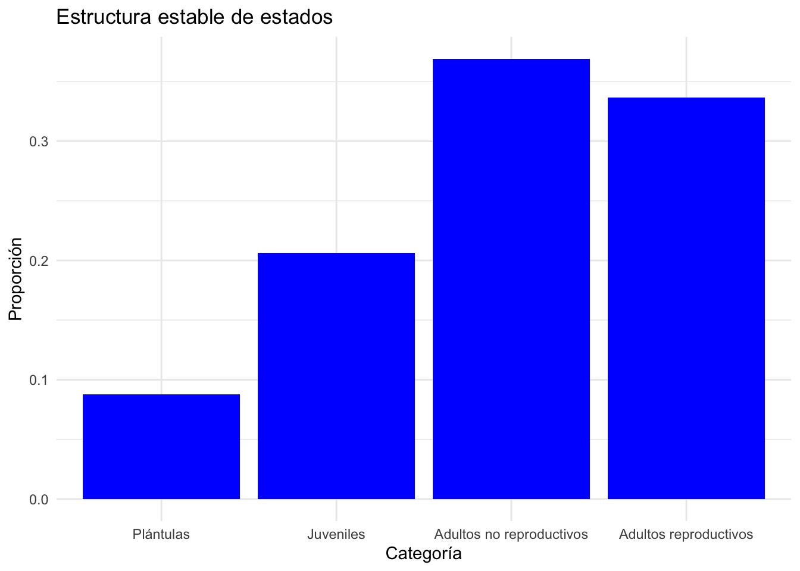
Valores reproductivos
El valor reproductivo v es un indice de la contribución de cada categoría de edad/estado a la tasa de crecimiento poblacional. En el caso de Lepanthes rubripetala se espera que la categoría de adultos reproductivos contribuya más a la tasa de crecimiento poblacional, seguido por la categoría de adultos no reproductivos, juveniles y plántulas. Los valores en la lista de v se compara con la primera edad/estado. Por consecuencia un individuo de la 4ta etapa (adulto reproductivo) tiene un potencial de dejar 2.7 individuos al comparar que una plantula tiene solamente tiene un valor de 1.0. La diferencia es que los individuos pequeños tienen que sobrevivir y llegar a las etapas mayores para contribuir a la tasa de crecimiento poblacional.
Code
valor_repro=reproductive.value(Lr1)valor_repro
1 2 3 4
1.000000 1.519043 2.316113 2.664676
Análisis de elasticidad
La elasticidad es un indice de la sensibilidad de la tasa de crecimiento poblacional a los cambios en las tasas de supervivencia, crecimiento y reproducción de cada categoría de edad/estado. La suma de todas las proporciones es 1.0, por consecuencia uno puede comparar el efecto de cambios proporcional en cada parámetro y evaluar su impacto. En el caso de Lepanthes rubripetala se espera que la tasa de crecimiento poblacional sea más sensible a los cambios en la supervivencia de los etapas 3 y 4 ya que tienen una elasticidad de 0.313 y 0.311 respectivamente. Si sumamos el componente de supervivencia (la diagonal) de la matriz de transición poblacional, la suma es (0.018 + 0.122 + 0.313 + 0.311) = 0.764. Por consecuencia, las etapas de supervivencia de los individuos contribuyen a 76.4% y son las etapas más sensitivas a los cambios demográficos. Al comparar si uno fuese a hacer un cambio proporcional en la reproducción (los adultos que dejan plántulas) tendría un impacto mucho más pequeño, solamente de 2.3%.
Los análisis de elasticidad pueden ser usado para evaluar que etapas que pudiese ayudar en enfocar las alternativas de manejo para cambiar la tasa de crecimiento poblacional. Por ejemplo si es una especie en peligro de extinción, uno puede enfocar los trabajos de manejo de la especie en mejorar la supervivencia de los individuos de las etapas más sensitivas. Al contrario si es una especie invasora, uno puede enfocar los trabajos de manejo en reducir la supervivencia de las etapas más sensitivas. En este caso seria reducir la supervivencia de los adultos reproductivos y no reproductivos. Enfocando en las etapas más sensitivas es una forma de maximizar el impacto de los trabajos de manejo con menos recursos. Naturalmente se asume que el manejo de estas etapas es posible, por ejemplo si la elasticidad es alta en una de las tranciciones, por ejemplo juvenil a adultos, pero no se conoce cual son la variables ambientales que impacta esa transiciones no se puede hacer un manejo efectivo.
Code
#Matriz de elasticidadelasticidad <-round(elas(Lr1),digit=3)elasticidad
El análisis de amortiguamiento es un indice de la rapidez con la que una población converge a su estructura estable después de un disturbio (Jiang et al., 2020). El indice de amortiguamiento \(d > 0\), y más grande el indice de amortiguamiento más rápido la población converge a la estructura estable. Se ha demostrado que hay una relación entre el indice de amortiguamiento y tiempo de generación de una especie (Jiang et al., 2020). El tiempo de amortiguamiento se calcula \(\tau=1/d\). Usando la función dr del paquete popbio, en el caso de Lepanthes rubripetala se espera estima que el indice de amortigamiento es 1.2 y que la población converga a su estructura estable en 12 meses, ya que los datos fueron recolectado y analizado mensualmente. Si los datos son recolectado fueron recolectado una vez al año entonces la población converga a su estructura estable en 12 años. Un supuesto importante es que la tasa de crecimiento intrínseca es igual para todos los periodos subsiguientes.
Code
#Relación de amortiguamientodampingratio <-dr(Lr1, return.time=TRUE, x=10)dampingratio
$dr
[1] 1.210702
$t
[1] 12.04278
Análisis de Convergencia
El tiempo de convergencia puede ser calculado a base de la cantidad de individuos en las diferentes etapas o edades. El tiempo de convergencia es el tiempo esperado en que una población alcanza la estructura estable. En el caso de Lepanthes rubripetala se espera que la población alcance la estructura estable en 25 meses si se comienza con una población sesgada de solamente plántulas (n=1000) y ninguno en las etapas subsiguientes.
Code
# Tiempo de convergencian =c(1000, 0, 0, 0)tconvergencia <-convt(Lr1, accuracy =1e-3, vector = n)tconvergencia
[1] 25
Si comenzamos con una población mucho más cerca a la estructura estable, podemos calcular el tiempo de convergencia. Digamos que se comienza con una población de 8, 20, 27 34 individuos en las etapas 1, 2, 3 y 4 respectivamente. En este caso se espera que la población alcance la estructura estable en 6 meses. En este caso vemos que el tiempo de convergencia es mucho más corto que si se comienza con una población sesgada de solamente plántulas.
En la dinámica transitoria o de corto plazo, Stott y colaboradores (2010, 2012) incorporaron la estocasticidad demográfica para analizar el cambio de la estructura poblacional debido a una perturbación de origen biótico, abiótico o antropogénico (i.e. cambios en la estructura incicial observada). Este tipo de estocasticidad se refiere a la sobrevivencia y reproducción en número entero y finito; es decir, un individuo sobrevive o no, lo cual se representa con 1 ó 0, al igual que puede reproducirse (1) o no (0). La incorporación de esta característica en los individuos genera una variación no cíclica ni predecible en la respuesta de los individuos de una población.
En el análisis transitorio, el modelo sesgado por etapas (i.e. categorías) es el procedimiento que se usa para evaluar la perturbación de la estructura inicial. La perturbación o sesgo en la estructura inicial se evalúa modificando la proporción de individuos presentes en alguna categoría de la estructura poblacional. Cabe señalar que estas modificaciones representan distintos escenarios o simulaciones que ocurren o pueden ocurrir en nuestra población de estudio.
Por ejemplo, la estructura inicial en la población 1 de Lepanthes rubripetala fue la siguiente: (0,46,38,82). En este caso, al modificar la proporción de individuos presente en una, dos o en todas las categorías de la población se simuló el cambio en la dinámica en el corto plazo; es decir, en un momento previo a que se alcance el crecimiento estable o de largo plazo. En Lepanthes rubripetala se hicieron cinco simulaciones o escenarios al suponer las siguientes proporciones de individuos por categoría (Tremblay et al, 2015):
Límite inferior: (1,0,0,0), los individuos de la población se contran en la categoría de plántulas (Lower bound).
Inicio I: (0.15, 0.35, 0,30, 0.20), mayor proporción de individuos en las categorías juvenil y adulto no reproductivo.
Estructura estable de la población: los individuos de la población tienen una abundancia de acuerdo con w-max.
Inicio II: (0.4, 0.2,0.2, 0.2), mayor proporción de plántulas y una proporción similar en las categorías juvenil, adulto no reproductivo y adulto reproductivo.
Límite superior: (0,0,0,1), los individuos de la población se contran en la categoría de adulto reproductivo.
Dinámica poblacional absoluta. Como consecuencia de las perturbaciones o escenarios existen cambios en el crecimiento poblacional, los cuales son evidentes si se grafican. Un aspecto a considerar es que, la gráfica que se genera incluye la influencia de la dinámica trasitoria y asintótica, por lo que se le denomina dinámica poblacional absoluta (Fig. 2A de Tremblay y colaboradores, 2015).
Code
##PASO 4. DINÁMICA POBLACIONAL ABSOLUTA. #Se proyecta el crecimiento poblacional ante cambios en la estructura #inicial debidos a la perturbación (5 escenarios). Esta gráfica incluye la #influencia de la dinámica trasitoria y asintótica, por lo que se le denomina #dinámica poblacional absoluta. Proyección a 50 meses.#Definir los margenespar(mfrow =c(1, 1))par(mar =c(3, 3, 3, 3))#Librerias de R requeridas para el análisis library(popdemo)library(popbio)library(ggplot2)library(dplyr)
Attaching package: 'dplyr'
The following objects are masked from 'package:stats':
filter, lag
The following objects are masked from 'package:base':
intersect, setdiff, setequal, union
Code
library(scales)#Vector originalnLr0 <-c(0, 46, 38, 82)#Escenario 1. Límite inferiornLr1 <-c(166, 0, 0, 0)#Proporción de individuos por categoríanLr1 <- nLr1/sum(nLr1)nLr1
[1] 1 0 0 0
Code
#Gráfica de barras del escenario 1 barplot(nLr1, names.arg =1:4)title(main ="Escenario 1", xlab ="Categoría", ylab ="Proporción")
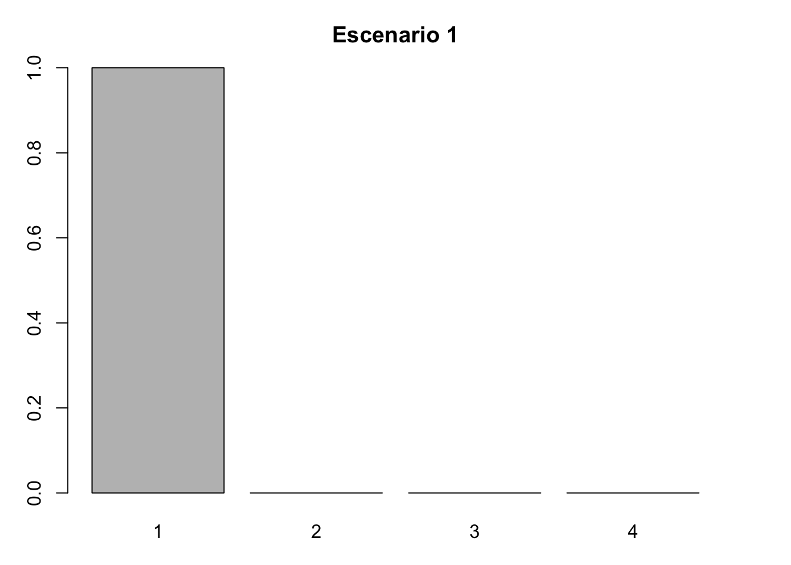
Code
#Proyección de la dinámica escenario 1pr1 <-project(Lr1, vector = nLr1, time =50)plot(pr1, log ="y", ylim =c(0.1, 1.6), ann =FALSE)title(main ="Proyección de la dinámica (Escenario 1)", xlab ="Time intervals", ylab ="Population size/density")
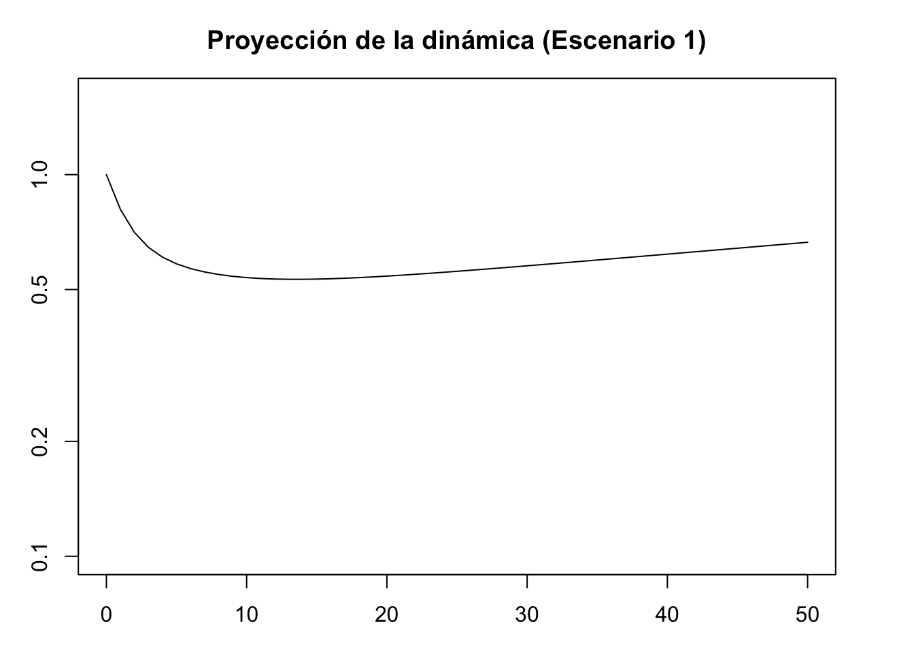
Code
#Escenario 2. Inicio InLr2 <-c(25, 58, 50, 33)#Proporción de individuos por categoríanLr2 <- nLr2/sum(nLr2)nLr2
[1] 0.1506024 0.3493976 0.3012048 0.1987952
Code
#Gráfica de barras del escenario 1 barplot(nLr2, names.arg =1:4)title( main ="Escenario 2", xlab ="Categoría", ylab ="Proporción")
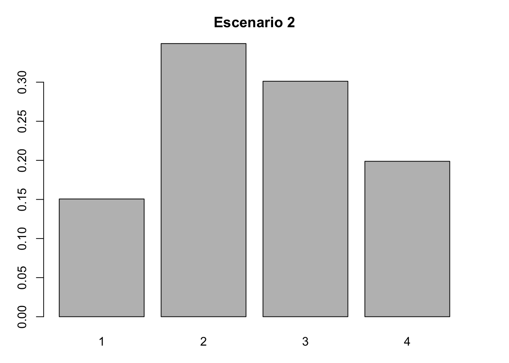
Code
#Proyección de la dinámica escenario 2 pr2 <-project(Lr1, vector = nLr2, time =50)plot(pr2, log ="y", ylim =c(0.1, 1.6), ann =FALSE)title(main ="Proyección de la dinámica (Escenario 2)", xlab ="Time intervals", ylab ="Population size/density")
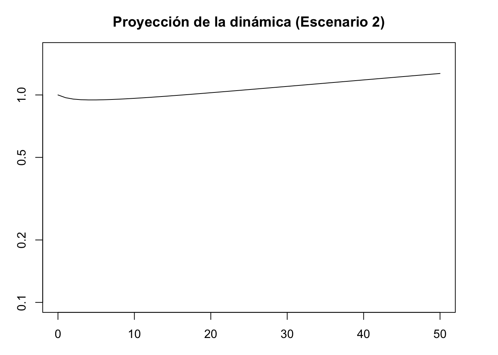
Code
#Escenario 3. Estructura establenLr3 <- Wmax#Gráfica de barras del escenario 3barplot(nLr3, names.arg =1:4)title( main ="Escenario 3", xlab ="Categoría", ylab ="Proporción")
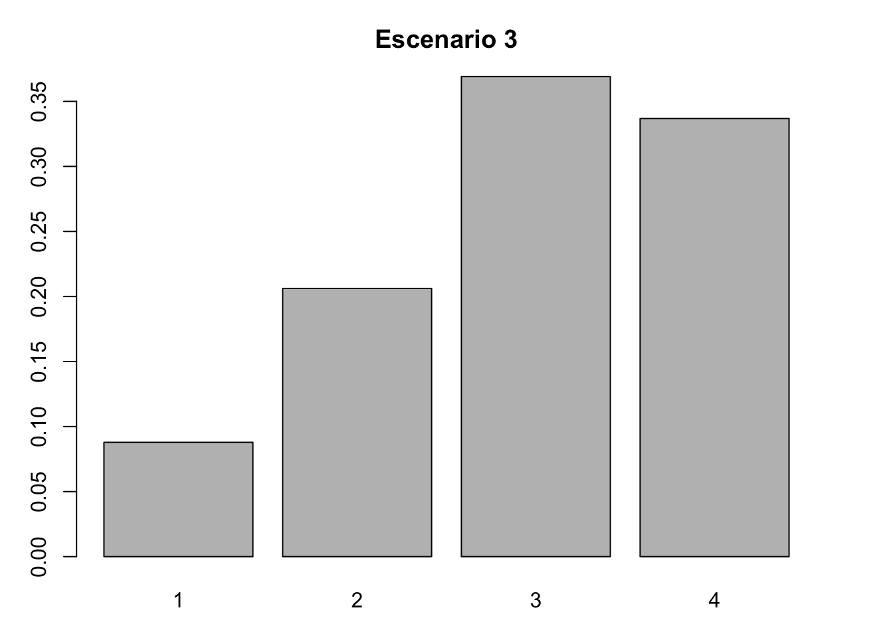
Code
#Proyección de la dinámica escenario 3 Lr1st <- (Lr1/lambda)Lr1st
pr3 <-project(Lr1st, vector = Wmax, time =50)plot(pr3, log ="y", ylim =c(0.1, 1.6), ann =FALSE)title(main ="Proyección de la dinámica (Escenario 3)", xlab ="Time intervals", ylab ="Population size/density")
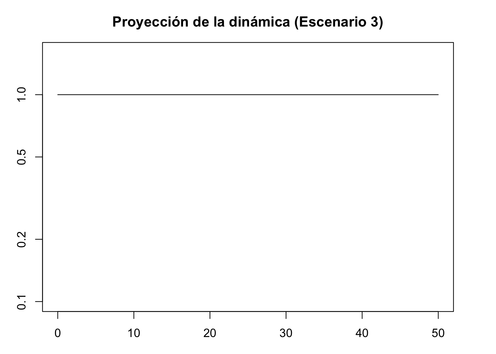
Code
#Escenario 4. Inicio IInLr4 <-c(66, 33, 33, 33)#Proporción de individuos por categoríanLr4 <- nLr4/sum(nLr4)nLr4
[1] 0.4 0.2 0.2 0.2
Code
#Gráfica de barras del escenario 4 barplot(nLr4, names.arg =1:4)title( main ="Escenario 4", xlab ="Categoría", ylab ="Proporción")
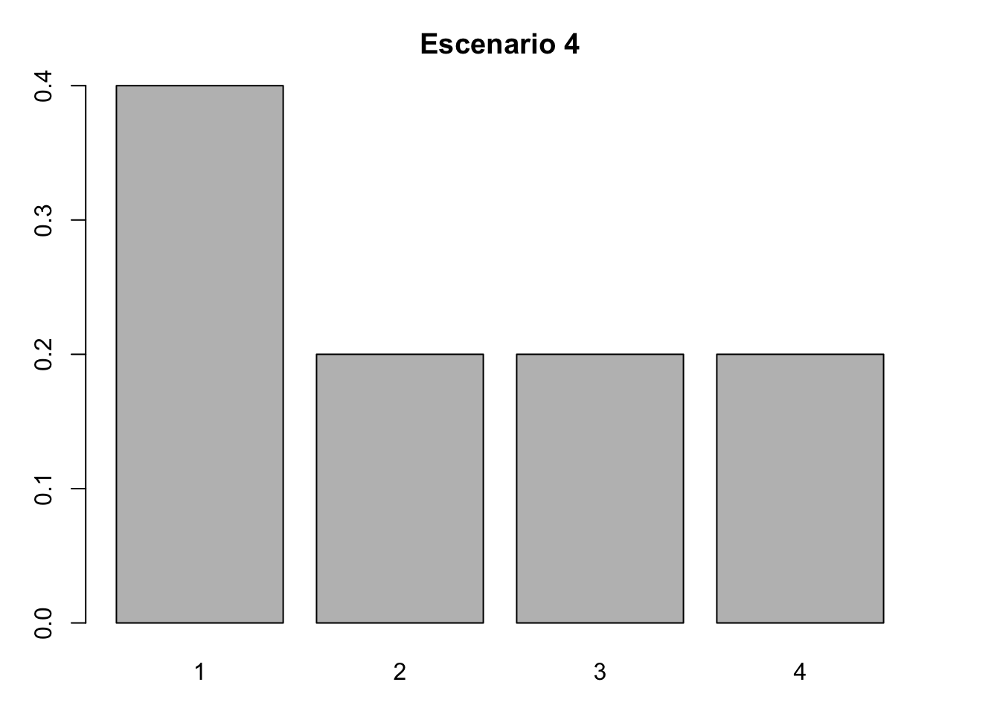
Code
#Proyección de la dinámica escenario 4 pr4 <-project(Lr1, vector = nLr4, time =50)plot(pr4, log ="y", ylim =c(0.1, 1.6), ann =FALSE)title(main ="Proyección de la dinámica (Escenario 4)", xlab ="Time intervals", ylab ="Population size/density")
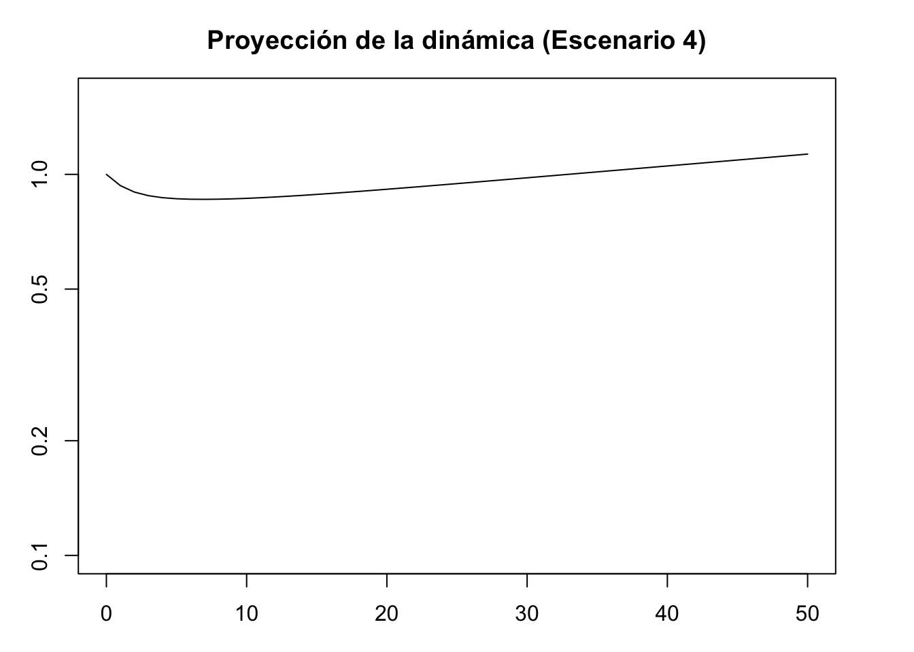
Code
#Escenario 5. Límite superiornLr5 <-c(0, 0, 0, 166)#Proporción de individuos por categoríanLr5 <- nLr5/sum(nLr5)nLr5
[1] 0 0 0 1
Code
#Gráfica de barras del escenario 5 barplot(nLr5, names.arg =1:4)title( main ="Escenario 5", xlab ="Categoría", ylab ="Proporción")
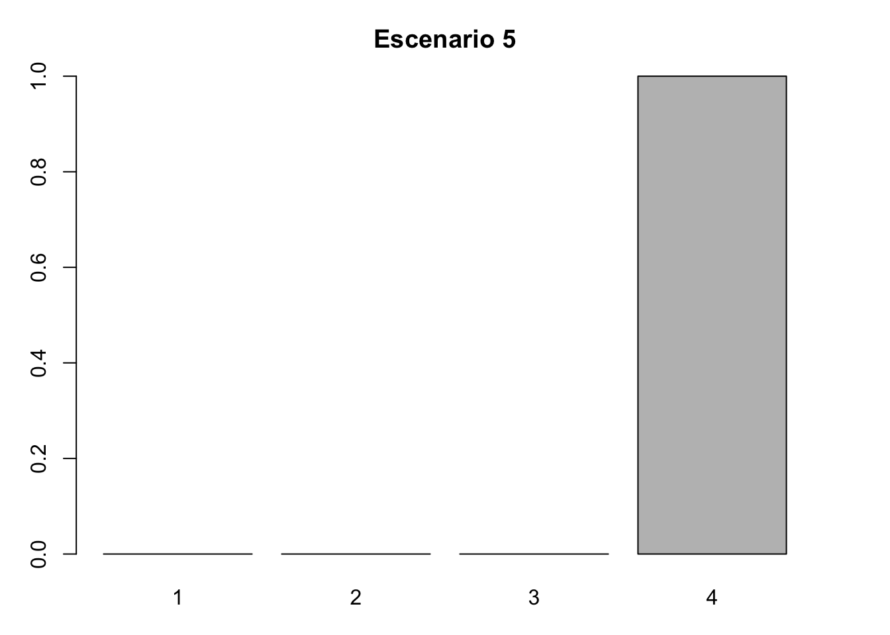
Code
#Proyección de la dinámica escenario 5 pr5 <-project(Lr1, vector = nLr5, time =50)plot(pr5, log ="y", ylim =c(0.1, 1.6), ann =FALSE)title(main ="Proyección de la dinámica (Escenario 5)", xlab ="Time intervals", ylab ="Population size/density")
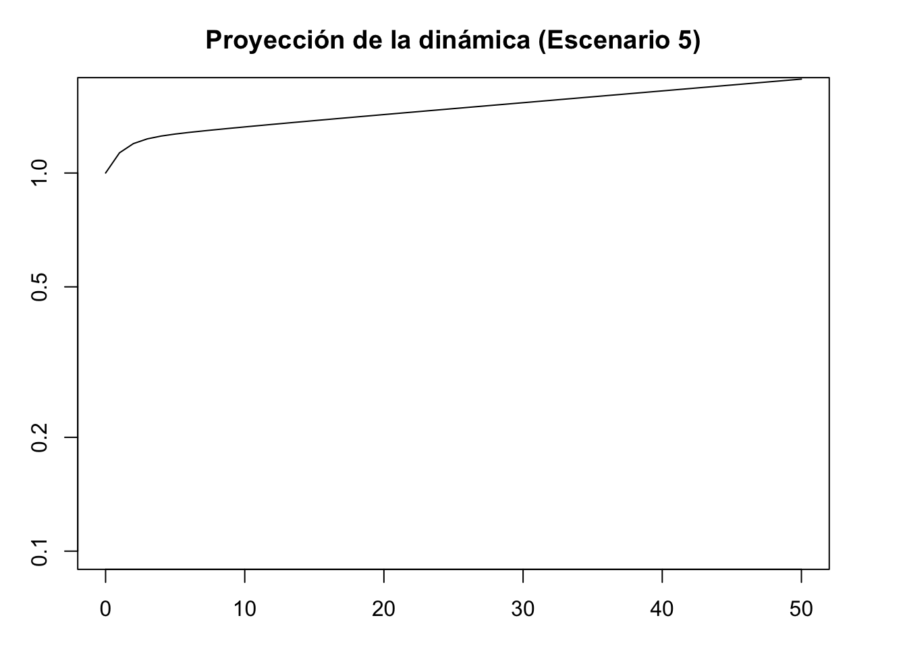
Code
#Gráfica de la dinámica absoluta Population_density <-stack(c(as.data.frame(pr1), as.data.frame(pr2), as.data.frame(pr3), as.data.frame(pr4), as.data.frame(pr5)))Population_density[, "time"] <-rep(seq(1, nrow(pr1), 1), 5)names(Population_density) <-c("Values", "Projection", "Time")#Population_density[, "Projection"] <- c(rep("Projection 1", len), rep("Projection 2", len), rep("Projection 3", len), rep("Projection 4", len), rep("Projection 5", len))abs.plot <-ggplot(data = Population_density) +theme_classic() +theme(panel.border =element_blank()) +theme(legend.position ="none") +geom_line(aes(x = Time, y = Values, group = Projection, colour = Projection), linewidth =0.8) +geom_hline(yintercept =1, linewidth =0.8) +scale_colour_manual(values =c("#C6E2FF", "#B9D3EE", "black", "#9FB6CD", "#6C7B8B")) +theme(axis.title.x =element_text(vjust =-1, size =12)) +theme(axis.title.y =element_text(vjust =1, size =12)) +theme(axis.text =element_text(size =12)) +labs(title ="Absolut population dynamics", x ="Projection intervals", y ="Population density relative to lambda max")+theme(plot.title =element_text(hjust =0.5, face ="bold", size =12))abs.plot
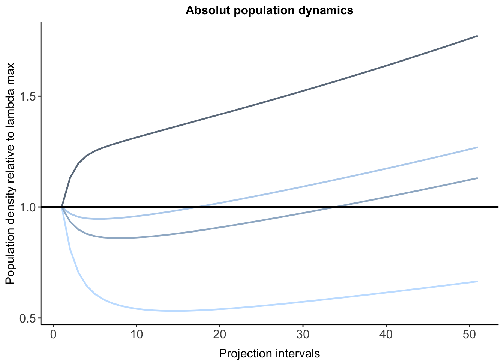
##Dinámica transitoria estandarizada: límites
Con el fin de evaluar en el corto plazo los cambios cuantitativos en la población en respuesta a una perturbación determinada se calculan los límites de la dinámica transitoria a través Índices de transferencia y se proyecta el crecimiento de la población en el corto plazo.
#Dinámica transitoria específica de la población.
a proyección se hace sin la influencia de la dinámica asintótica. hecho que facilita y hace equitativa la comparación entre los modelos de los distintos escenarios. Se elimina el efecto de la dinámica asintótica al estandarizar la matriz y el vector de la estructura. En el primer caso se usa el comando ‘standard.A=T’, lo cual supone que en el largo plazo la tasa de crecimiento poblacional tendrá un valor de 1 (unidad) -por lo que la población no crecerá ni declinará, en el segundo caso se usa el comando ‘standard.vec=T’, que implica que éste suma 1 (Stoot et al., 2010, 2012). DINÁMICA POBLACIONAL TRANSITORIA ESTANDARIZADA
Índices de transferencia. Con el fin de evaluar en el corto plazo qué cambios cuantitativos habría en la población como respuesta ante una perturbación determinada, se calculan los límites de la dinámica transitoria a través de los Índices de transferencia, que incluyen los siguiente tres parámetros (Stoot et al. 2012):
Reactividad alta y Reactividad baja (Upper reactivity y Lower reactivity) que representan el crecimiento o el decremento inmediato (i.e. primer intervalo de tiempo) de la población antes de alcanzar la tasa constante de crecimiento poblacional.
Máxima amplificación/Máxima atenuación (Maximum amplification/Maximum attenuation) que indican,respectivamente, el incremento o decremento máximo futuro del crecimiento poblacional previo a alcanzar la tasa constante de crecimiento poblacional.
Inercia alta e Inercia baja (Upper inertia y Lower inertia) que evalúan el límite más alto o el más bajo en el crecimiento de la población antes de alcanzar la tasa constante de crecimiento poblacional, respectivamente.
Code
### PARTE II: DINÁMICA POBLACIONAL TRANSITORIA ESTANDARIZADA.#Modelo de Dinámica transitoria específica de la población ## La dinámica de corto plazo se projecta a partir de la matriz de transición y el vector inicial previamente definidos#Definir los margeneslibrary(popdemo)library(ggplot2)#Vector de estructura inicial: abundancia por categoría de acuerdo con el estado n0 <-c(0, 46, 38, 82) ## 1) PROYECCIÓN DE LA DINÁMICA DE CORTO PLAZO. Con la función PROJECT se proyectar la a 50 meses, tomando en #cuenta la matriz de transición poblacional y el vector de la estructura.#En esta función se elimina el efecto de la dinámica asintótica al estandarizar: #a) la matriz usando el comando 'standard.A=T', lo cual significa que #en el largo plazo la tasa de crecimiento poblacional tendrá #un valor de 1 (unidad), por lo que la población no crecerá ni declinará. #b) el vector de la estructura usando 'standard.vec=T', lo cual supone que éste suma 1, # Ambas estandarizaciones facilitan y hacen equitativa la comparación entre modelos #con distintos tamaños poblacionales y distintas tasas de crecimiento de largo plazo. #Gráfica de la dinámica de corto plazo por escenario. En la graficación se usa la misma matriz pero se cambia el vector de acuerdo con el escenario#Escenario 1: Límite inferiorpr2.1<-project(Lr1, vector = nLr1, time =50, standard.A = T, standard.vec = T)#Plot the amplification projection and label it# Se atenua (decrece)plot(pr2.1, log ="y", main ="Dinámica a corto plazo (Escenario 1)", cex.axis =0.8)
Code
#Escenario 2. Inicio Ipr2.2<-project(Lr1, vector = nLr2, time =50, standard.A = T, standard.vec = T)#Plot the amplification projection and label itplot(pr2.2, log ="y", main ="Dinámica a corto plazo (Escenario 2)", cex.axis =0.8) # Se atenua (decrece)
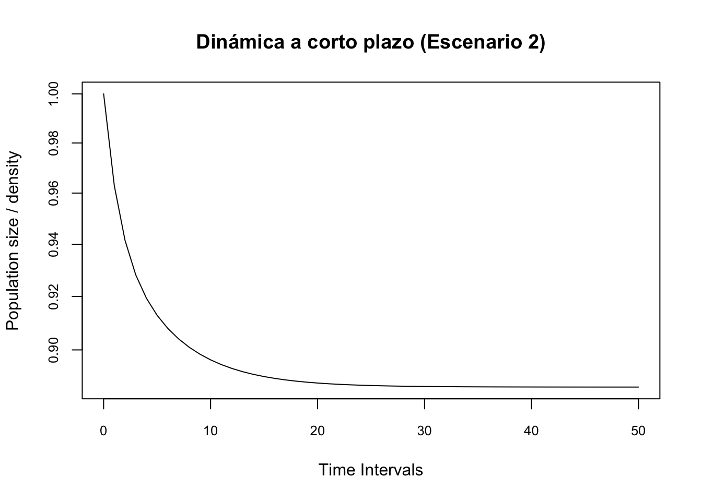
Code
#Escenario 3. Estructura establepr2.3<-project(Lr1, vector = nLr3, time =50, standard.A = T, standard.vec = T)#Plot the amplification projection and label itplot(pr2.3, main ="Dinámica a corto plazo (Escenario 3)", cex.axis =0.8)# Se amplifica (crece)
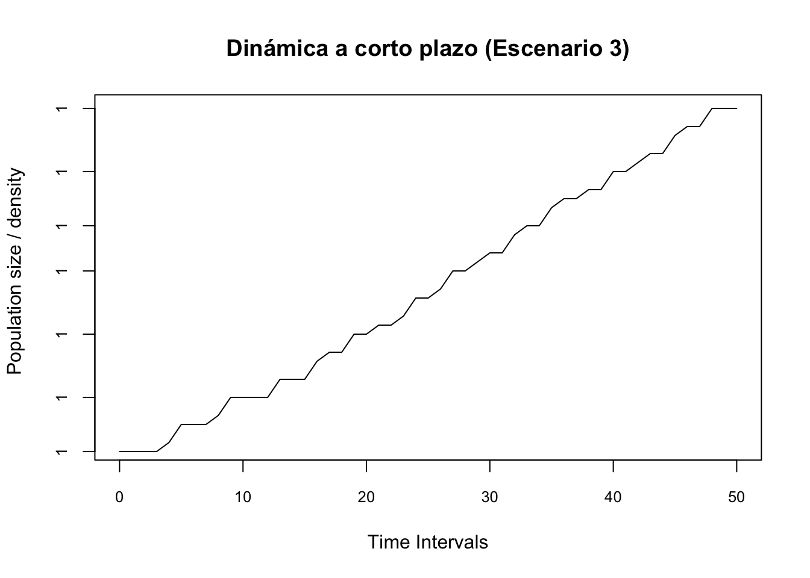
Code
#Escenario 4. Inicio IIpr2.4<-project(Lr1, vector = nLr4, time =50, standard.A = T, standard.vec = T)#Plot the amplification projection and label itplot(pr2.4, log ="y", main ="Dinámica a corto plazo (Escenario 4)", cex.axis =0.8)# Se atenua (decrece)
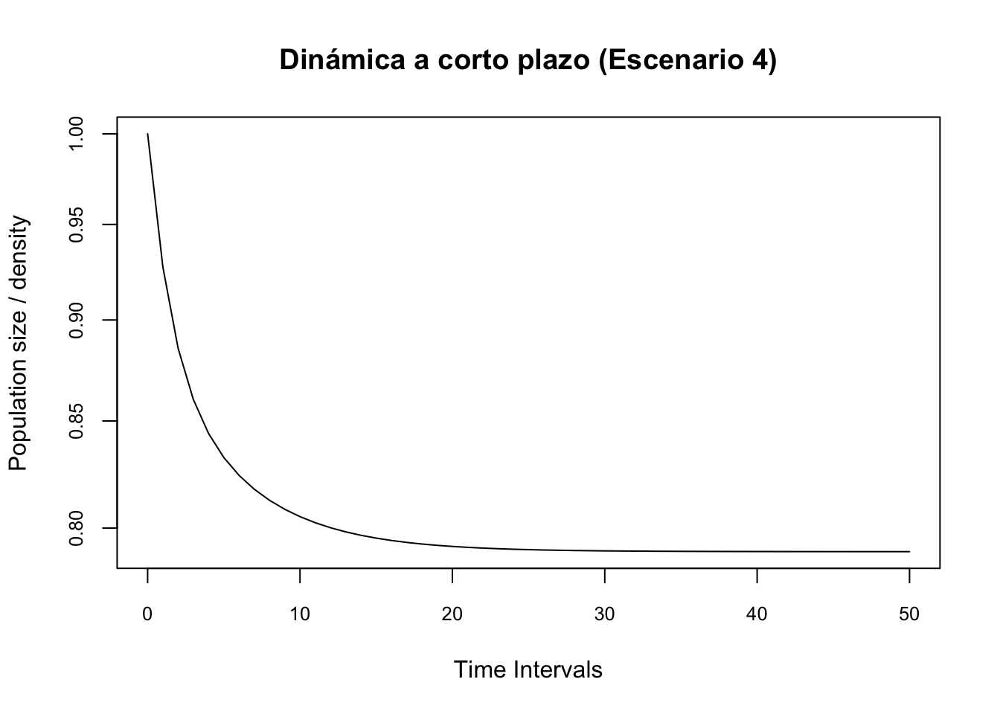
Code
#Escenario 5. Límite superiorpr2.5<-project(Lr1, vector = nLr5, time =50, standard.A = T, standard.vec = T)#Plot the amplification projection and label itplot(pr2.5, log ="y", main ="Dinámica a corto plazo (Escenario 5)", cex.axis =0.8)# Se amplifica (crece)
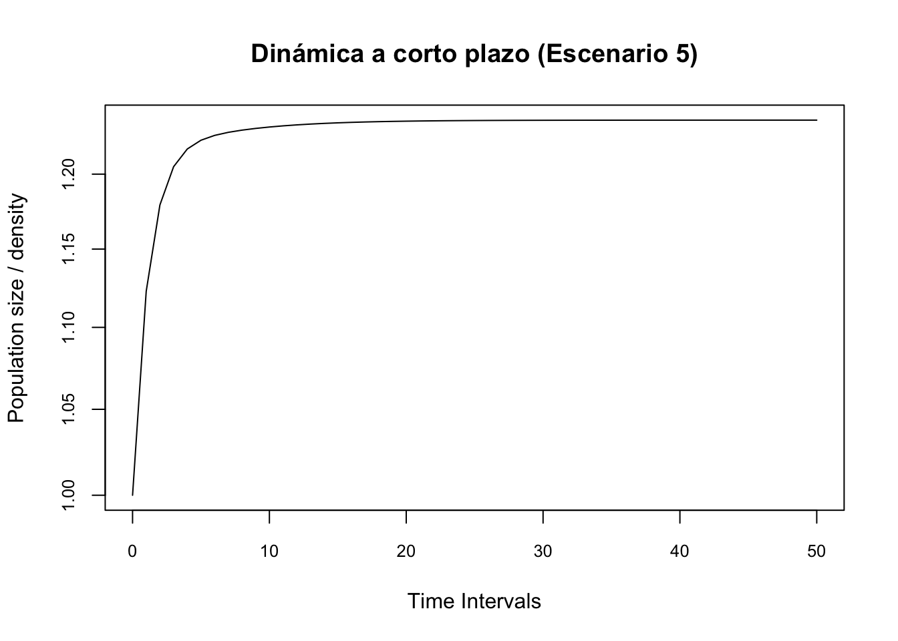
Code
#2) LIMITES TRANSITORIOS POR ESCENARIO.#Escenario 1: Límite inferior#Cálculo de los limites transitorioslibrary(popdemo)lim.trans <-as.data.frame(matrix(NA, 5, 3))names(lim.trans) <-c("reac", "maxatt", "inertia")reac1<-reac(Lr1, vector = nLr1)lim.trans[1, 1] <- reac1reac1
Warning in is.na(x): is.na() applied to non-(list or vector) of type
'expression'
Warning in is.na(x): is.na() applied to non-(list or vector) of type
'expression'
Warning in is.na(x): is.na() applied to non-(list or vector) of type
'expression'
Warning in is.na(x): is.na() applied to non-(list or vector) of type
'expression'
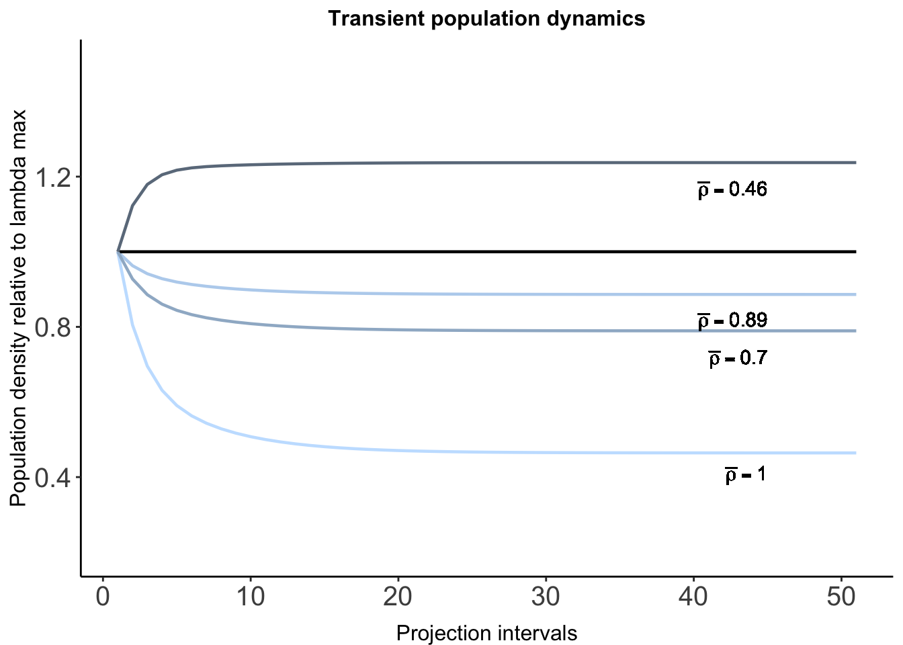
##Funciones de transferencia Finalmente, el cálculo de las funciones de transferencia representa el último paso en análisis de dinámica transitoria establecido por Stott y colaboradores (2012). A través de estas ecuaciones se evalúa la elasticidad o efecto de la perturbación sobre la dinámica poblacional. A diferencia de las matrices de elasticidad de los modelos de proyección poblacional, estas elasticidades no son lineales y evidencian la importancia relativa de la de la perturbación en la categoría de tamaño/estado sobre el crecimiento de la población en el corto plazo. Estas ecuaciones también están disponibles en el programa Popdemo de R y sus resultados se representan a través de gráficas.
La perturbación de la estructura está determinada ppor dos vectores d y e
Code
##PASO 6: ANALISIS DE LAS FUNCIONES DE TRANSFERENCIA #Establecer márgenes:#Vector originallibrary(popdemo)nLr0 <-c(0, 46, 38, 82)#PERTURBACIÓN DEL VECTOR ORIGINAL#1) Entrada de la matriz a(1,1): plántulas a plántulastf1 <-tfa_lambda(Lr1, d =c(1, 0, 0, 0),e =c(1, 0, 0, 0),prange =seq(0, 4, 0.01))#Gráfica de la dinámica poblacionalplot(tf1, ann =FALSE)title(main ="Dinámica poblacional (Plántulas - Plántulas)", ylab ="Lambda", xlab ="p")#Cálculo de lambda-max:lambda1 <-Re(eigen(Lr1)$values[1]) #Cálculo de la sensibilidad sens1 <-tfs_lambda(Lr1, d =c(1, 0, 0, 0), e =c(1, 0, 0, 0))#Agregar la línea, especificando el intercepto y la pendienteabline(lambda1, sens1, lty =2, col ="red")
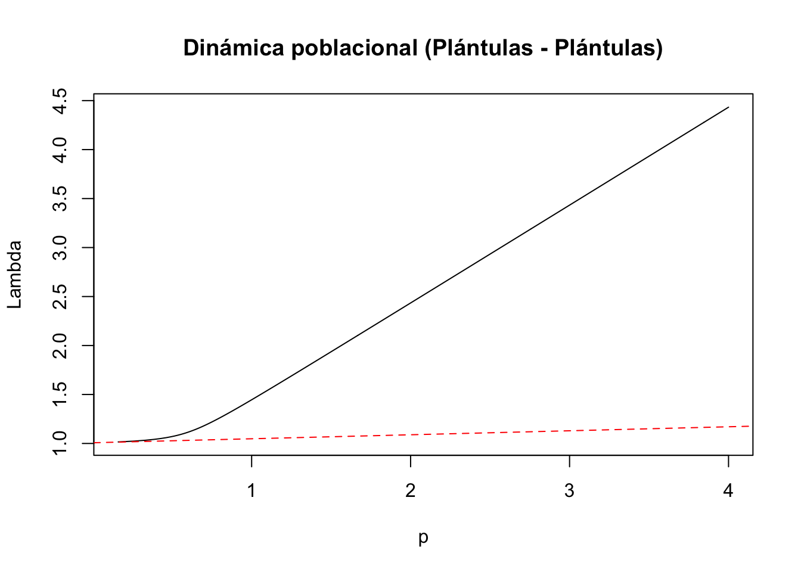
Code
#2) Entrada de la matriz a(2,1): plántulas y juvenilestf2 <-tfa_lambda(Lr1, d =c(0, 1, 0, 0),e =c(1, 0, 0, 0),prange =seq(-0.4, 0.6, 0.01))#Gráfica de la dinámica poblacionalplot(tf2, ann =FALSE)title(main ="Dinámica poblacional (Plántulas - Juveniles)", ylab ="Lambda", xlab ="p")#Cálculo de lambda-max:lambda2 <-Re(eigen(Lr1)$values[1]) #Cálculo de la sensibilidad sens2 <-tfs_lambda(Lr1, d =c(0, 1, 0, 0), e =c(1, 0, 0, 0))#Agregar la línea, especificando el intercepto y la pendienteabline(lambda2, sens2, lty =2, col ="red")
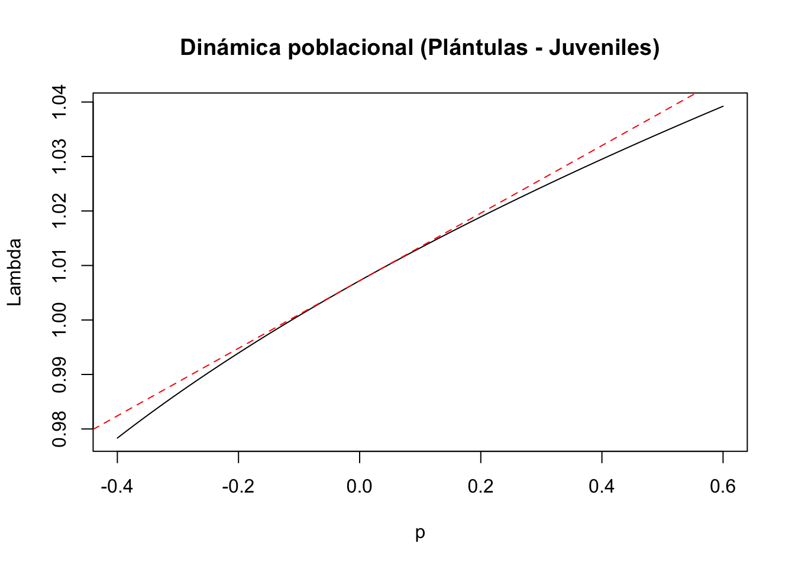
Code
#3) Entrada de la matriz a(2,2): juveniles y juvenilestf3 <-tfa_lambda(Lr1, d =c(0, 1, 0, 0),e =c(0, 1, 0, 0),prange =seq(-0.8, 0.1, 0.001))#Gráfica de la dinámica poblacionalplot(tf3, ann =FALSE)title(main ="Dinámica poblacional (Juveniles - Juveniles)", ylab ="Lambda", xlab ="p")#Cálculo de lambda-max:lambda3 <-Re(eigen(Lr1)$values[1]) #Cálculo de la sensibilidad sens3 <-tfs_lambda(Lr1, d =c(0, 1, 0, 0), e =c(0, 1, 0, 0))#Agregar la línea, especificando el intercepto y la pendienteabline(lambda3, sens3, lty =2, col ="red")
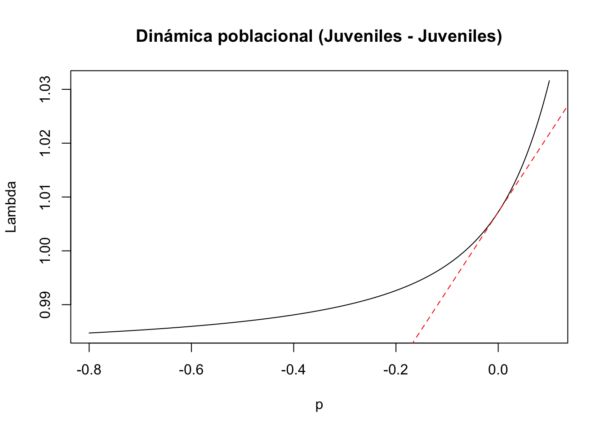
Code
#4) Entrada de la matriz a(3,2): juveniles y no reproductivostf4 <-tfa_lambda(Lr1, d =c(0, 0, 1, 0),e =c(0, 1, 0, 0),prange =seq(-0.001, 0.03, 0.01))#Gráfica de la dinámica poblacionalplot(tf4, ann =FALSE)title(main ="Dinámica poblacional (Juveniles - No reproductivos)", ylab ="Lambda", xlab ="p")#Cálculo de lambda-max:lambda4 <-Re(eigen(Lr1)$values[1]) #Cálculo de la sensibilidadsens4 <-tfs_lambda(Lr1, d =c(0,0,1,0), e =c(0, 1, 0, 0))#Agregar la línea, especificando el intercepto y la pendienteabline(lambda4, sens4, lty =2, col ="red")
Code
#5) Entrada de la matriz a(4,2): juveniles a adultostf5 <-tfa_lambda(Lr1, d =c(0,0,0,1),e =c(0,1,0,0),prange =seq(0,0.8,0.01))#Gráfica de la dinámica poblacionalplot(tf5, ann =FALSE)title(main ="Dinámica poblacional (Juveniles - Adultos)", ylab ="Lambda", xlab ="p")#Cálculo de lambda-max:lambda5 <-Re(eigen(Lr1)$values[1]) #Cálculo de la sensibilidadsens5 <-tfs_lambda(Lr1, d =c(0, 0, 0, 1), e =c(0, 1, 0, 0))#Agregar la línea, especificando el intercepto y la pendienteabline(lambda5, sens5, lty =2, col ="red")
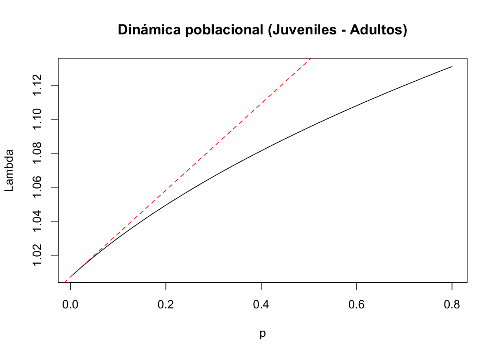
Code
#6) Entrada de la matriz a(3,3): adultos no reproductivos a adultos no reproductivostf6 <-tfa_lambda(Lr1, d =c(0, 0, 1, 0),e =c(0, 0, 1, 0),prange =seq(-0.8, 0.2, 0.01))#Gráfica de la dinámica poblacionalplot(tf6, ann =FALSE)title(main ="Dinámica poblacional (Adultos No rep - Adultos No reproductivos)", ylab ="Lambda", xlab ="p")#Cálculo de lambda-max:lambda6 <-Re(eigen(Lr1)$values[1]) #Cálculo de la sensibilidadsens6 <-tfs_lambda(Lr1, d =c(0,0,0,1), e =c(0,1,0,0))#Agregar la línea, especificando el intercepto y la pendienteabline(lambda6, sens6, lty =2, col ="red")
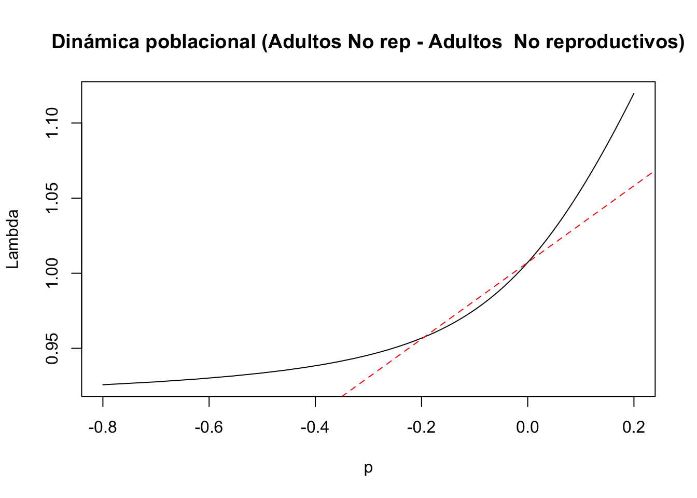
Code
#7) Entrada de la matriz a(4,3): adultos no reproductivos a adultos reproductivostf7 <-tfa_lambda(Lr1, d =c(0,0,0,1),e =c(0,0,1,0),prange =seq(-0.2,0.8,0.001))#Gráfica de la dinámica poblacionalplot(tf7, ann =FALSE)title(main ="Dinámica poblacional (Adultos No rep - Adultos No rep)", ylab ="Lambda", xlab ="p")#Cálculo de lambda-max:lambda7 <-Re(eigen(Lr1)$values[1]) #Cálculo de la sensibilidadsens7 <-tfs_lambda(Lr1, d =c(0,0,0,1), e =c(0,0,1,0))#Agregar la línea, especificando el intercepto y la pendienteabline(lambda7, sens7, lty =2, col ="red")
Code
#8) Entrada de la matriz a(1,4): adultos reproductivos a plántulastf8 <-tfa_lambda(Lr1, d =c(1,0,0,0),e =c(0,0,0,1),prange =seq(-0.2,0.8,0.001))#Gráfica de la dinámica poblacionalplot(tf8, ann =FALSE)title(main ="Dinámica poblacional (Adultos reproductivos - Plántulas)", ylab ="Lambda", xlab ="p")#Cálculo de lambda-max:lambda8 <-Re(eigen(Lr1)$values[1]) #Cálculo de la sensibilidadsens8 <-tfs_lambda(Lr1, d =c(1,0,0,0), e =c(0,0,0,1))#Agregar la línea, especificando el intercepto y la pendienteabline(lambda8, sens8, lty =2, col ="red")
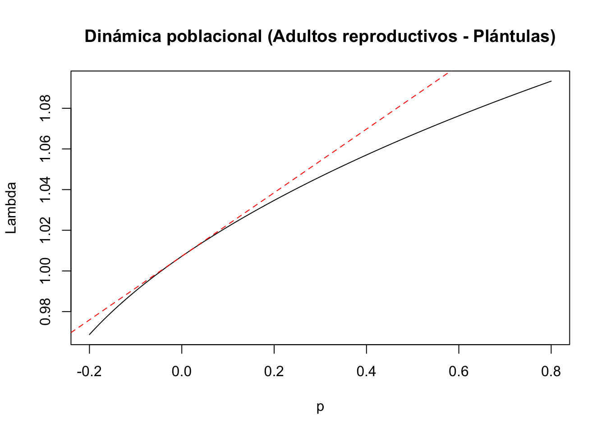
Code
#9) Entrada de la matriz a(3,4): adultos reproductivos a plántulastf9 <-tfa_lambda(Lr1, d =c(0, 0,1, 0),e =c(0, 0, 0,1),prange =seq(-0.2, 0.8, 0.001))#Gráfica de la dinámica poblacionalplot(tf9, ann =FALSE)title(main ="Dinámica poblacional (Adultos reproductivos - Plántulas)", ylab ="Lambda", xlab ="p")#Cálculo de lambda-max:lambda9 <-Re(eigen(Lr1)$values[1]) #Cálculo de la sensibilidadsens9 <-tfs_lambda(Lr1, d =c(0, 0, 0,1), e =c(0, 0, 1, 0))#Agregar la línea, especificando el intercepto y la pendienteabline(lambda9, sens9, lty =2, col ="red")
Code
#10) Entrada de la matriz a(4,4): adultos reproductivos a adultos reproductivostf10 <-tfa_lambda(Lr1, d =c(0, 0, 0, 1),e =c(0, 0, 0, 1),prange =seq(-0.6, 0.2, 0.001))#Gráfica de la dinámica poblacionalplot(tf10, ann =FALSE)title(main ="Dinámica poblacional (Adultos rep - Adultos rep)", ylab ="Lambda", xlab ="p")#Cálculo de lambda-max:lambda10 <-Re(eigen(Lr1)$values[1]) #Cálculo de la sensibilidadsens10 <-tfs_lambda(Lr1, d =c(0,0,0,1), e =c(0,0,0,1))#Agregar la línea, especificando el intercepto y la pendienteabline(lambda10, sens10, lty =2, col ="red")#Definir márgenespar(mfrow =c(4,4))par(mfg =c(1,1))#Gráficas de la función de transferencia de la inercia en el ciclo de vida de L. rubripetala (población 1)tfmatriz <-tfam_inertia(Lr1,vector = nLr0)plot(tfmatriz)
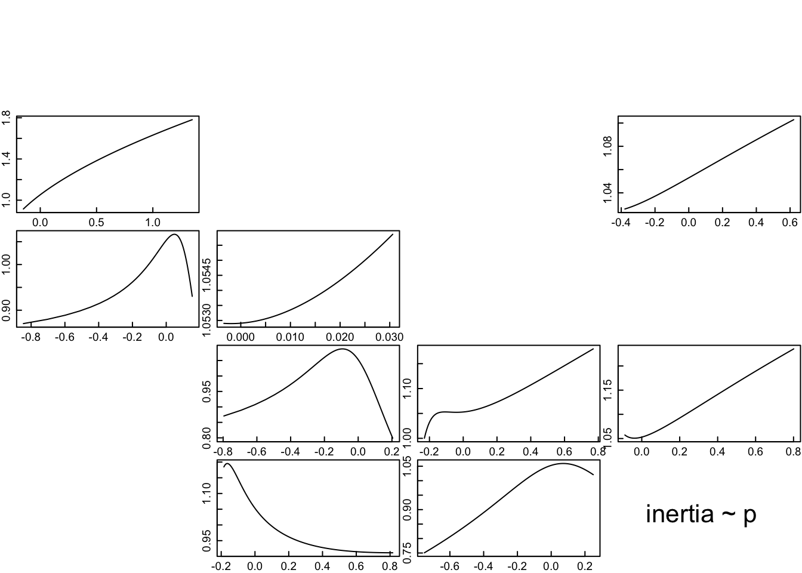
Raventós y colaboradores (2015) estimaron el crecimiento poblacional de corto plazo de dos orquídeas epífitas después del paso de un huracán. Dado que a su paso se pierden individuos, se simuló si la reintroducción de plántulas y adultos mitigaban los efectos de este fenómeno en Cuba. Los resultados sugieren que la reintroducción de adultos tiene un efecto positivo sobre
References
Bierzychudek P. 1999. Looking backwards: Assessing the projections of a transition matrix model. Ecological Applications 9:1278–1287.
Jiang S, Jaggi H, Zuo W, Oli MK, Gaillard J-M, Tuljapurkar S. 2020. Life-history dynamics: Damping time, demographic dispersion and generation time. bioRxiv:2020–12.
Raventós J, González E, Mújica E, Bonet A. 2015. Transient population dynamics of two epiphytic orchid species after hurricane ivan: Implications for management. Biotropica 47:441–448. DOI: 10.1111/btp.12231.
Schödelbauerová I, Tremblay R, Kindlmann P. 2010. Prediction vs. Reality: Can a PVA model predict population persistence 13 years later? Biodiversity and Conservation 19:637–650. DOI: 10.1007/s10531-009-9724-1.
Stott I, Hodgson DJ, Townley S. 2012a. Popdemo: An r package for population demography using projection matrix analysis. Methods in Ecology and Evolution 3:797–802.
Stott I, Hodgson DJ, Townley S. 2012b. Beyond sensitivity: Nonlinear perturbation analysis of transient dynamics. Methods in Ecology and Evolution 3:673–684.
Stott I, Townley S, Carslake D, Hodgson DJ. 2010. On reducibility and ergodicity of population projection matrix models. Methods in Ecology and Evolution 1:242–252.
Stott I, Townley S, Hodgson DJ. 2011. A framework for studying transient dynamics of population projection matrix models. Ecology Letters 14:959–970.
Tremblay R, Raventos J, Ackerman J. 2015. When stable-stage equilibrium is unlikely: Integrating transient population dynamics improves asymptotic methods. Annals of Botany 116:381–390. DOI: 10.1093/aob/mcv031.
Source Code
# Dinámica transitoria 2 {#DinTrans}Autores: "Mariana Hernández Apolinar y Paola Portillo Tzompa"## Dinámica poblacional de largo y corto plazoLos modelos de proyección poblacional (MPP), previamente vistos en la *Sección XX*, son de carácter determinístico; es decir, éstos suponen que las muertes, la reproducción y el crecimiento individual (i.e. tasas vitales) en las distintas categorías de la población no varían en el tiempo; por lo tanto, al mantenerse constantes la población crece a una velocidad constante y la proporción de individuos por categoría de tamaño/estado no cambia en el largo plazo [@bierzychudek1999looking; **Caswell, 2001? es el libro?**]. Sin embargo, en la naturaleza estas variables distan de ser constantes, debido a que las poblaciones experimentan recursos limitados, ambientes heterogéneos tanto abioticos y bioticos y cambiantes que perturban las poblaciones, afectando su dinámica y sugiriendo que la tasa de crecimiento de largo plazo no es un buen predictor de los cambios que enfrentan dichas las poblaciones [@bierzychudek1999looking; Caswell, 2001]. De ahí que, se hayan desarrollado modelos que integran dicha variación y que permiten hacer proyecciones más realistas sobre la dinámica poblacional de la especie de estudio, tal es el caso de los modelos de de crecimiento estocástico y los análisis de dinámica transitoria.En particular, los análisis de la dinámica transitoria surgen como una alternativa para analizar cómo cambia la dinámica de una población en el tiempo al presentarse un evento de perturbación (cambios bioticos o abioticos en el tiempo). En este análisis se evalúa la respuesta de la población en el corto plazo; es decir, antes de alcanzar la estructura estable de estadios/edades y de crecer a una tasa constante **(ref)**. Dicha respuesta se determina a través de las discrepancias o diferencias que hay entre la estructura actual (i.e. corto plazo) y la estructura estable (i.e. largo plazo) de la población analizada [@raventos2015transient].Debido a que el análisis de la dinámica transitoria es complejo, para facilitar y asimilar su desarrollo, a continuación se listan la serie de pasos que se deben seguir. El análisis se lleva a cabo en el Programa de estadística *R* y la serie de pasos fue definida por Stott y colaboradores [@stott2011framework; @stott2012beyond; @stott2012popdemo].<br>*Paso 1. Matriz de transición y estructura poblacional inicial*.En primer lugar se debe contar con una matriz de proyección poblacional y su vector correspondiente de la estructura poblacional observada al inicio del estudio. En en este caso se usarán los datos obtenidos para *Lepanthes rubripetala* por Tremblay y colaboradores [@tremblay2015stable; @schodelbauerova2010prediction].## PROYECTO DE DINAMICA TRANSITORIA O DE CORTO PLAZO### PART I: DINÁMICA POBLACIONAL DE LARGO PLAZOEste es un análisis de dinámica transitoria para *Lepanthes rubripetala* (Población 1) con cuatro clases de estado en su ciclo de vida:- plántula,- juvenil,- adultos no reproductivos,- adultos reproductivos.<br>### PASO 1. MATRIZ DE PROYECCIÓN POBLACIONAL y ESTRUCTURA POBLACIONAL INICIAL $t_{0}$```{r Extra1, message=FALSE}#Librerias de R requeridas para el análisis library(popdemo)library(popbio)#Capturar los datos de la matriz para L. rubripetala (Tremblay et al. 2015)Lr <- matrix(c(0.4324, 0, 0, 0.15, 0.3784, 0.8459, 0, 0, 0, 0.0034, 0.7954,0.2300, 0, 0.0890, 0.1841,0.7510), byrow=TRUE,ncol=4)#Capturar las categorias de estadocategoria <- c("1","2","3","4")#Obtener la matriz L. rubripetala Lr1 <- matrix(Lr[1:4, ], nrow = 4, dimnames = list(categoria, categoria))Lr1```<br>#### Capturar y obtener el vector inicial (datos de campo) de clases de estado población 1Los datos provienen de la siguiente fuenta: [@tremblay2015stable; @schodelbauerova2010prediction] y se refieren a la estructura poblacional inicial de *Lepanthes rubripetala* en la población 1. La estructura poblacional inicial de la población 1 de *L. rubripetala* fue la siguiente:- plántula, n= 0- juvenil, n= 46- adultos no reproductivos, n= 38- adultos reproductivos, n = 82```{r}n0 <-c(0, 46, 38, 82) n0```<br>*Paso 2: Condiciones que debe cumplir la matriz de estudio*.Previo al análisis de dinámica transitoria se debe comprobar que la matriz de transición poblacional sea: a) Irreducible, que los elementos de la matriz de análisis y, por lo tanto, los nodos de la gráfica del ciclo de vida, estén fuertemente conectados, tengan una ruta, de modo que formen un ciclo. b) Ergódica, que la dinámica asintótica sea independiente de las condiciones iniciales (i.e. estructura poblacional inicial)\c) Primitiva, que al elevar a altas potencias una matriz irreducible positiva (i.e. sin elementos negativos) su resultado sea único y tenga un sólo valor positivo (i.e. tasa de crecimiento poblacional). (Caswell, 2001)Así que, a continuación se comprueba si la matriz de *L. rubripetala* cumple con estas condiciones o supuestos.#### Definición de términos Ergodicidad, Irrecucible y Primitiva- El primer punto para cualquier análisis de dinámica poblacional es que la matriz tiene que ser cuadricular n\*n y no negativa.- La matriz tiene que ser **ergódica**: Irrelevante de la estructura de etapas inicial que se usa para proyectar el crecimiento poblacional siempre tendrá el mismo crecimiento asintomático.- La matriz tiene que ser **irreducible**: El ciclo de vida de la especie tiene las transiciones para que cualquier etapas puede llegar a todas las otras etapas.Para una discusión sobre estas condiciones vea a [@stott2010reducibility]Para evaluar si las matrices son ergodica y irreducible se usa las funciones **isErgodic** y **isIrreducible**. Vea que en las cajas siguiente el resultado es "TRUE" por consecuencia cumple con ambas condiciones.#### a) Ergodicidad```{r Extra2}ergo <- isErgodic(Lr1, digits = 5, return.eigvec = FALSE)ergo```#### b) Irreducible```{r chap10_irreduc}irreduc <- isIrreducible(Lr1)irreduc```<br>*Paso 3: Análisis demográfico básico*.En el análisis de dinámica transitoria necesitamos conocer cómo se comporta una población en el largo plazo, por lo que se proyecta el crecimiento poblacional de tipo asintótico para la matriz de la población seleccionada. Entonces, a partir de la matriz de proyección poblacional y el correspondiente vector de la estructura poblacional observada al inicio del estudio de *L. rubripetala*, calcularemos la tasa de crecimiento poblacional (i.e.*lambda*, de ahora en adelante *lambda-max*), la estructura poblacional estable (*w*, de ahora en adelante *w-max*) y el valor reproductivo (*v*), así como las matrices de sensibilidad y elasticidad. Con este fin, usaremos el procedimiento de la *Sección X*, desarrollado en el *Programa "popbio" de R*.Además de esta información, se estimarán dos nuevos términos: el tiempo de convergencia (*convergence-time*) y la relación de amortiguamiento (*damping-ratio*). El primero indica el tiempo esperado en que una población alcanza la estructura estable, mientras que el segundo es una medida de que tan rápido converge una población a la estructura estable (Caswell, 2001).### Crecimiento asintóticoLa definición del crecimiento asintótico de la población *lambda* se basa en la tasa de crecimiento poblacional cuando la población este a su nivel estable de estructura de edades/estados. Por consecuencia se asume que la población llegue o este a un nivel estructura de edades/estados estable.Para la población de *Lepanthes rubripetala* se obtiene una tasa de crecimiento poblacional de 1.007, lo que indica que la población crece a una tasa constante de 1.007 entre $t_{0}$ y $t_{1}$. Entonces si la población tuviese 1000 individuos hubiese 7 individuos más en $t_{1}$.```{r Extra3}#Análisis asintótico (i.e. largo plazo) del crecimiento poblacional de L. rubripetala#La orquídea florece todo el año, por lo que el seguimiento de la población fue mensual. #PARÁMETROS POBLACIONALES##lambda: Tasa de crecimiento poblacionallambda <-lambda(Lr1)lambda```## Estructura estableLa estructura estable de edades/etapas es un indice de la distribución proporcional de la poblacional que se espera que esta población alcance en el largo plazo. En el caso de *Lepanthes rubripetala* se espera que la población alcance una estructura estable de 0.088, 0.206, 0.369 y 0.337 para las categorías de plántulas, juveniles, adultos no reproductivos y adultos reproductivos, respectivamente. Esta estructura asume que el crecimiento poblacional *lambda* $\lambda$ sigue igual y constante en el tiempo.```{r Extra4}#Estructura estable de estadosWmax <- stable.stage(Lr1)Wmax```Uno puede visualizar la estructura la estructura de la población usando el codigo siguiente.```{r}Wdf=data.frame(Wmax)Wdf$Categorias=c("Plántulas","Juveniles","Adultos no reproductivos","Adultos reproductivos")Wdf$Categorias=factor(Wdf$Categorias, levels=c("Plántulas","Juveniles","Adultos no reproductivos","Adultos reproductivos"))library(ggplot2)ggplot(Wdf, aes(y=Wmax, x=Categorias)) +geom_bar(stat="identity", fill="blue") +labs(title="Estructura estable de estados", x="Categoría", y="Proporción") +theme_minimal()```## Valores reproductivosEl valor reproductivo *v* es un indice de la contribución de cada categoría de edad/estado a la tasa de crecimiento poblacional. En el caso de *Lepanthes rubripetala* se espera que la categoría de adultos reproductivos contribuya más a la tasa de crecimiento poblacional, seguido por la categoría de adultos no reproductivos, juveniles y plántulas. Los valores en la lista de *v* se compara con la primera edad/estado. Por consecuencia un individuo de la 4ta etapa (adulto reproductivo) tiene un potencial de dejar 2.7 individuos al comparar que una plantula tiene solamente tiene un valor de 1.0. La diferencia es que los individuos pequeños tienen que sobrevivir y llegar a las etapas mayores para contribuir a la tasa de crecimiento poblacional.```{r Extra5}valor_repro=reproductive.value(Lr1)valor_repro```## Análisis de elasticidadLa elasticidad es un indice de la sensibilidad de la tasa de crecimiento poblacional a los cambios en las tasas de supervivencia, crecimiento y reproducción de cada categoría de edad/estado. La suma de todas las proporciones es 1.0, por consecuencia uno puede comparar el efecto de cambios proporcional en cada parámetro y evaluar su impacto. En el caso de *Lepanthes rubripetala* se espera que la tasa de crecimiento poblacional sea más sensible a los cambios en la supervivencia de los etapas 3 y 4 ya que tienen una elasticidad de 0.313 y 0.311 respectivamente. Si sumamos el componente de supervivencia (la diagonal) de la matriz de transición poblacional, la suma es (0.018 + 0.122 + 0.313 + 0.311) = 0.764. Por consecuencia, las etapas de supervivencia de los individuos contribuyen a 76.4% y son las etapas más sensitivas a los cambios demográficos. Al comparar si uno fuese a hacer un cambio proporcional en la reproducción (los adultos que dejan plántulas) tendría un impacto mucho más pequeño, solamente de 2.3%.Los análisis de elasticidad pueden ser usado para evaluar que etapas que pudiese ayudar en enfocar las alternativas de manejo para cambiar la tasa de crecimiento poblacional. Por ejemplo si es una especie en peligro de extinción, uno puede enfocar los trabajos de manejo de la especie en mejorar la supervivencia de los individuos de las etapas más sensitivas. Al contrario si es una especie invasora, uno puede enfocar los trabajos de manejo en reducir la supervivencia de las etapas más sensitivas. En este caso seria reducir la supervivencia de los adultos reproductivos y no reproductivos. Enfocando en las etapas más sensitivas es una forma de maximizar el impacto de los trabajos de manejo con menos recursos. Naturalmente se asume que el manejo de estas etapas es posible, por ejemplo si la elasticidad es alta en una de las tranciciones, por ejemplo juvenil a adultos, pero no se conoce cual son la variables ambientales que impacta esa transiciones no se puede hacer un manejo efectivo.```{r Extra6}#Matriz de elasticidadelasticidad <- round(elas(Lr1),digit=3)elasticidad```## Análisis de Amortiguamiento/Damping RatioEl análisis de amortiguamiento es un indice de la rapidez con la que una población converge a su estructura estable después de un disturbio [@jiang2020life]. El indice de amortiguamiento $d > 0$, y más grande el indice de amortiguamiento más rápido la población converge a la estructura estable. Se ha demostrado que hay una relación entre el indice de amortiguamiento y tiempo de generación de una especie [@jiang2020life]. El tiempo de amortiguamiento se calcula $\tau=1/d$. Usando la función *dr* del paquete **popbio**, en el caso de *Lepanthes rubripetala* se espera estima que el indice de amortigamiento es 1.2 y que la población converga a su estructura estable en 12 meses, ya que los datos fueron recolectado y analizado mensualmente. Si los datos son recolectado fueron recolectado una vez al año entonces la población converga a su estructura estable en 12 años. Un supuesto importante es que la tasa de crecimiento intrínseca es igual para todos los periodos subsiguientes.```{r Extra7}#Relación de amortiguamientodampingratio <- dr(Lr1, return.time=TRUE, x=10)dampingratio```## Análisis de ConvergenciaEl tiempo de convergencia puede ser calculado a base de la cantidad de individuos en las diferentes etapas o edades. El tiempo de convergencia es el tiempo esperado en que una población alcanza la estructura estable. En el caso de *Lepanthes rubripetala* se espera que la población alcance la estructura estable en 25 meses si se comienza con una población sesgada de solamente plántulas (n=1000) y ninguno en las etapas subsiguientes.```{r Extra8}# Tiempo de convergencian = c(1000, 0, 0, 0)tconvergencia <- convt(Lr1, accuracy = 1e-3, vector = n)tconvergencia```Si comenzamos con una población mucho más cerca a la estructura estable, podemos calcular el tiempo de convergencia. Digamos que se comienza con una población de 8, 20, 27 34 individuos en las etapas 1, 2, 3 y 4 respectivamente. En este caso se espera que la población alcance la estructura estable en 6 meses. En este caso vemos que el tiempo de convergencia es mucho más corto que si se comienza con una población sesgada de solamente plántulas.```{r Extra9}n2 = c(8, 20, 27, 34)tconvergencia <- convt(Lr1, accuracy = 1e-3, vector = n2)tconvergencia```## Dinámica transitoriaEn la dinámica transitoria o de corto plazo, Stott y colaboradores (2010, 2012) incorporaron la estocasticidad demográfica para analizar el cambio de la estructura poblacional debido a una perturbación de origen biótico, abiótico o antropogénico (i.e. cambios en la estructura incicial observada). Este tipo de estocasticidad se refiere a la sobrevivencia y reproducción en número entero y finito; es decir, un individuo sobrevive o no, lo cual se representa con 1 ó 0, al igual que puede reproducirse (1) o no (0). La incorporación de esta característica en los individuos genera una variación no cíclica ni predecible en la respuesta de los individuos de una población.En el análisis transitorio, el modelo sesgado por etapas (i.e. categorías) es el procedimiento que se usa para evaluar la perturbación de la estructura inicial. La perturbación o sesgo en la estructura inicial se evalúa modificando la proporción de individuos presentes en alguna categoría de la estructura poblacional. Cabe señalar que estas modificaciones representan distintos escenarios o simulaciones que ocurren o pueden ocurrir en nuestra población de estudio.Por ejemplo, la estructura inicial en la población 1 de *Lepanthes rubripetala* fue la siguiente: (0,46,38,82). En este caso, al modificar la proporción de individuos presente en una, dos o en todas las categorías de la población se simuló el cambio en la dinámica en el corto plazo; es decir, en un momento previo a que se alcance el crecimiento estable o de largo plazo. En *Lepanthes rubripetala* se hicieron cinco simulaciones o escenarios al suponer las siguientes proporciones de individuos por categoría (Tremblay et al, 2015):1. Límite inferior: (1,0,0,0), los individuos de la población se contran en la categoría de plántulas (Lower bound).2. Inicio I: (0.15, 0.35, 0,30, 0.20), mayor proporción de individuos en las categorías juvenil y adulto no reproductivo.3. Estructura estable de la población: los individuos de la población tienen una abundancia de acuerdo con *w-max*.4. Inicio II: (0.4, 0.2,0.2, 0.2), mayor proporción de plántulas y una proporción similar en las categorías juvenil, adulto no reproductivo y adulto reproductivo.5. Límite superior: (0,0,0,1), los individuos de la población se contran en la categoría de adulto reproductivo.*Dinámica poblacional absoluta*. Como consecuencia de las perturbaciones o escenarios existen cambios en el crecimiento poblacional, los cuales son evidentes si se grafican. Un aspecto a considerar es que, la gráfica que se genera incluye la influencia de la dinámica trasitoria y asintótica, por lo que se le denomina dinámica poblacional absoluta (Fig. 2A de Tremblay y colaboradores, 2015).```{r Extra10}##PASO 4. DINÁMICA POBLACIONAL ABSOLUTA. #Se proyecta el crecimiento poblacional ante cambios en la estructura #inicial debidos a la perturbación (5 escenarios). Esta gráfica incluye la #influencia de la dinámica trasitoria y asintótica, por lo que se le denomina #dinámica poblacional absoluta. Proyección a 50 meses.#Definir los margenespar(mfrow = c(1, 1))par(mar = c(3, 3, 3, 3))#Librerias de R requeridas para el análisis library(popdemo)library(popbio)library(ggplot2)library(dplyr)library(scales)#Vector originalnLr0 <- c(0, 46, 38, 82)#Escenario 1. Límite inferiornLr1 <- c(166, 0, 0, 0)#Proporción de individuos por categoríanLr1 <- nLr1/sum(nLr1)nLr1#Gráfica de barras del escenario 1 barplot(nLr1, names.arg = 1:4)title(main = "Escenario 1", xlab = "Categoría", ylab = "Proporción")#Proyección de la dinámica escenario 1pr1 <- project(Lr1, vector = nLr1, time = 50)plot(pr1, log = "y", ylim = c(0.1, 1.6), ann = FALSE)title(main = "Proyección de la dinámica (Escenario 1)", xlab = "Time intervals", ylab = "Population size/density")#Escenario 2. Inicio InLr2 <- c(25, 58, 50, 33)#Proporción de individuos por categoríanLr2 <- nLr2/sum(nLr2)nLr2#Gráfica de barras del escenario 1 barplot(nLr2, names.arg = 1:4)title( main = "Escenario 2", xlab = "Categoría", ylab = "Proporción")#Proyección de la dinámica escenario 2 pr2 <- project(Lr1, vector = nLr2, time = 50)plot(pr2, log = "y", ylim = c(0.1, 1.6), ann = FALSE)title(main = "Proyección de la dinámica (Escenario 2)", xlab = "Time intervals", ylab = "Population size/density")#Escenario 3. Estructura establenLr3 <- Wmax#Gráfica de barras del escenario 3barplot(nLr3, names.arg = 1:4)title( main = "Escenario 3", xlab = "Categoría", ylab = "Proporción")#Proyección de la dinámica escenario 3 Lr1st <- (Lr1/lambda)Lr1steigen(Lr1st)pr3 <- project(Lr1st, vector = Wmax, time = 50)plot(pr3, log = "y", ylim = c(0.1, 1.6), ann = FALSE)title(main = "Proyección de la dinámica (Escenario 3)", xlab = "Time intervals", ylab = "Population size/density")#Escenario 4. Inicio IInLr4 <- c(66, 33, 33, 33)#Proporción de individuos por categoríanLr4 <- nLr4/sum(nLr4)nLr4#Gráfica de barras del escenario 4 barplot(nLr4, names.arg = 1:4)title( main = "Escenario 4", xlab = "Categoría", ylab = "Proporción")#Proyección de la dinámica escenario 4 pr4 <- project(Lr1, vector = nLr4, time = 50)plot(pr4, log = "y", ylim = c(0.1, 1.6), ann = FALSE)title(main = "Proyección de la dinámica (Escenario 4)", xlab = "Time intervals", ylab = "Population size/density")#Escenario 5. Límite superiornLr5 <- c(0, 0, 0, 166)#Proporción de individuos por categoríanLr5 <- nLr5/sum(nLr5)nLr5#Gráfica de barras del escenario 5 barplot(nLr5, names.arg = 1:4)title( main = "Escenario 5", xlab = "Categoría", ylab = "Proporción")#Proyección de la dinámica escenario 5 pr5 <- project(Lr1, vector = nLr5, time = 50)plot(pr5, log = "y", ylim = c(0.1, 1.6), ann = FALSE)title(main = "Proyección de la dinámica (Escenario 5)", xlab = "Time intervals", ylab = "Population size/density")#Gráfica de la dinámica absoluta Population_density <- stack(c(as.data.frame(pr1), as.data.frame(pr2), as.data.frame(pr3), as.data.frame(pr4), as.data.frame(pr5)))Population_density[, "time"] <- rep(seq(1, nrow(pr1), 1), 5)names(Population_density) <- c("Values", "Projection", "Time")#Population_density[, "Projection"] <- c(rep("Projection 1", len), rep("Projection 2", len), rep("Projection 3", len), rep("Projection 4", len), rep("Projection 5", len))abs.plot <- ggplot(data = Population_density) +theme_classic() +theme(panel.border = element_blank()) +theme(legend.position = "none") +geom_line(aes(x = Time, y = Values, group = Projection, colour = Projection), linewidth = 0.8) +geom_hline(yintercept = 1, linewidth = 0.8) +scale_colour_manual(values = c("#C6E2FF", "#B9D3EE", "black", "#9FB6CD", "#6C7B8B")) +theme(axis.title.x = element_text(vjust = -1, size = 12)) +theme(axis.title.y = element_text(vjust = 1, size = 12)) + theme(axis.text = element_text(size = 12)) +labs(title = "Absolut population dynamics", x = "Projection intervals", y = "Population density relative to lambda max")+ theme(plot.title = element_text(hjust = 0.5, face = "bold", size = 12))abs.plot ```##Dinámica transitoria estandarizada: límitesCon el fin de evaluar en el corto plazo los cambios cuantitativos en la población en respuesta a una perturbación determinada se calculan los límites de la dinámica transitoria a través Índices de transferencia y se proyecta el crecimiento de la población en el corto plazo.#Dinámica transitoria específica de la población.\a proyección se hace sin la influencia de la dinámica asintótica. hecho que facilita y hace equitativa la comparación entre los modelos de los distintos escenarios. Se elimina el efecto de la dinámica asintótica al estandarizar la matriz y el vector de la estructura. En el primer caso se usa el comando 'standard.A=T', lo cual supone que en el largo plazo la tasa de crecimiento poblacional tendrá un valor de 1 (unidad) -por lo que la población no crecerá ni declinará, en el segundo caso se usa el comando 'standard.vec=T', que implica que éste suma 1 (Stoot et al., 2010, 2012). DINÁMICA POBLACIONAL TRANSITORIA ESTANDARIZADA*Índices de transferencia*. Con el fin de evaluar en el corto plazo qué cambios cuantitativos habría en la población como respuesta ante una perturbación determinada, se calculan los límites de la dinámica transitoria a través de los *Índices de transferencia*, que incluyen los siguiente tres parámetros (Stoot et al. 2012):a) *Reactividad alta y Reactividad baja* (Upper reactivity y Lower reactivity) que representan el crecimiento o el decremento inmediato (i.e. primer intervalo de tiempo) de la población antes de alcanzar la tasa constante de crecimiento poblacional.b) *Máxima amplificación/Máxima atenuación* (Maximum amplification/Maximum attenuation) que indican,respectivamente, el incremento o decremento máximo futuro del crecimiento poblacional previo a alcanzar la tasa constante de crecimiento poblacional.c) *Inercia alta e Inercia baja* (Upper inertia y Lower inertia) que evalúan el límite más alto o el más bajo en el crecimiento de la población antes de alcanzar la tasa constante de crecimiento poblacional, respectivamente.```{r Extra11}### PARTE II: DINÁMICA POBLACIONAL TRANSITORIA ESTANDARIZADA.#Modelo de Dinámica transitoria específica de la población ## La dinámica de corto plazo se projecta a partir de la matriz de transición y el vector inicial previamente definidos#Definir los margeneslibrary(popdemo)library(ggplot2)#Vector de estructura inicial: abundancia por categoría de acuerdo con el estado n0 <- c(0, 46, 38, 82) ## 1) PROYECCIÓN DE LA DINÁMICA DE CORTO PLAZO. Con la función PROJECT se proyectar la a 50 meses, tomando en #cuenta la matriz de transición poblacional y el vector de la estructura.#En esta función se elimina el efecto de la dinámica asintótica al estandarizar: #a) la matriz usando el comando 'standard.A=T', lo cual significa que #en el largo plazo la tasa de crecimiento poblacional tendrá #un valor de 1 (unidad), por lo que la población no crecerá ni declinará. #b) el vector de la estructura usando 'standard.vec=T', lo cual supone que éste suma 1, # Ambas estandarizaciones facilitan y hacen equitativa la comparación entre modelos #con distintos tamaños poblacionales y distintas tasas de crecimiento de largo plazo. #Gráfica de la dinámica de corto plazo por escenario. En la graficación se usa la misma matriz pero se cambia el vector de acuerdo con el escenario#Escenario 1: Límite inferiorpr2.1 <- project(Lr1, vector = nLr1, time = 50, standard.A = T, standard.vec = T)#Plot the amplification projection and label it# Se atenua (decrece)plot(pr2.1, log = "y", main = "Dinámica a corto plazo (Escenario 1)", cex.axis = 0.8)#Escenario 2. Inicio Ipr2.2 <- project(Lr1, vector = nLr2, time = 50, standard.A = T, standard.vec = T)#Plot the amplification projection and label itplot(pr2.2, log = "y", main = "Dinámica a corto plazo (Escenario 2)", cex.axis = 0.8) # Se atenua (decrece)#Escenario 3. Estructura establepr2.3 <- project(Lr1, vector = nLr3, time = 50, standard.A = T, standard.vec = T)#Plot the amplification projection and label itplot(pr2.3, main = "Dinámica a corto plazo (Escenario 3)", cex.axis = 0.8)# Se amplifica (crece)#Escenario 4. Inicio IIpr2.4 <- project(Lr1, vector = nLr4, time = 50, standard.A = T, standard.vec = T)#Plot the amplification projection and label itplot(pr2.4, log = "y", main = "Dinámica a corto plazo (Escenario 4)", cex.axis = 0.8)# Se atenua (decrece)#Escenario 5. Límite superiorpr2.5 <- project(Lr1, vector = nLr5, time = 50, standard.A = T, standard.vec = T)#Plot the amplification projection and label itplot(pr2.5, log = "y", main = "Dinámica a corto plazo (Escenario 5)", cex.axis = 0.8)# Se amplifica (crece)#2) LIMITES TRANSITORIOS POR ESCENARIO.#Escenario 1: Límite inferior#Cálculo de los limites transitorioslibrary(popdemo)lim.trans <- as.data.frame(matrix(NA, 5, 3))names(lim.trans) <- c("reac", "maxatt", "inertia")reac1<-reac(Lr1, vector = nLr1)lim.trans[1, 1] <- reac1reac1maxatt1<-maxatt(Lr1, vector = nLr1, return.t=T)maxatt1lim.trans[1, 2] <- maxatt1[1]inertia1<-inertia(Lr1, vector = nLr1)inertia1lim.trans[1, 3] <- inertia1#Escenario 2. Inicio Ireac2<-reac(Lr1, vector = nLr2)reac2lim.trans[2, 1] <- reac2maxatt2<-maxatt(Lr1, vector = nLr2, return.t=T)maxatt2lim.trans[2, 2] <- maxatt2[1]inertia2<-inertia(Lr1, vector = nLr2)inertia2lim.trans[2, 3] <- inertia2#Escenario 3. Estructura estable#reac3<-reac(Lr1, vector = nLr3)#lim.trans[3, 1] <- reac1#reac3#maxamp3<-maxamp(Lr1, vector = nLr3, return.t=T)#maxamp3#lim.trans[3, 2] <- maxamp3[1]#inertia3<-inertia(Lr1, vector = nLr3)#inertia3#lim.trans[3, 3] <- inertia3#Escenario 4. Inicio IIreac4<-reac(Lr1, vector = nLr4)lim.trans[4, 1] <- reac1reac4maxatt4<-maxatt(Lr1, vector = nLr4, return.t=T)maxatt4lim.trans[4, 2] <- maxatt4[1]inertia4<-inertia(Lr1, vector = nLr4)inertia4lim.trans[4, 3] <- inertia4#Escenario 5. Límite superiorreac5<-reac(Lr1, vector = nLr5)lim.trans[5, 1] <- reac5reac5maxamp5<-maxamp(Lr1, vector = nLr5, return.t=T)maxamp5lim.trans[5, 2] <- maxamp5[1]inertia5<-inertia(Lr1, vector = nLr3)inertia5lim.trans[5, 3] <- inertia5# Dinamica transitoria plotlen <- nrow(pr2.1)Population_density <- stack(c(as.data.frame(pr2.1), as.data.frame(pr2.2), as.data.frame(pr2.3), as.data.frame(pr2.4), as.data.frame(pr2.5)))Population_density[, "time"] <- rep(seq(1, len, 1), 5)names(Population_density) <- c("Values", "Projection", "Time")Population_density[, "Projection"] <- c(rep("Projection 1", len), rep("Projection 2", len), rep("Projection 3", len), rep("Projection 4", len), rep("Projection 5", len))trans.plot <- ggplot(data = Population_density) +theme_classic() +theme(panel.border = element_blank()) +theme(legend.position = "none") +geom_line(aes(x = Time, y = Values, group = Projection, colour = Projection), linewidth = 0.8) +scale_colour_manual(values = c("#C6E2FF", "#B9D3EE", "black", "#9FB6CD", "#6C7B8B")) +theme(axis.title.x = element_text(vjust = -1, size = 12)) +theme(axis.title.y = element_text(vjust = 1, size = 12)) + theme(axis.text = element_text(size = 15)) +labs(title = "Transient population dynamics" ,x = "Projection intervals", y = "Population density relative to lambda max") + theme(plot.title = element_text(hjust = 0.5, face = "bold", size = 12)) +ylim(0.2, 1.5)trans.plot + geom_text(x = 45, y = 1.09, label = expression(paste(bar(rho) == 0.46)), hjust = 1.0, vjust = -1) +geom_text(x = 45, y = 0.74, label = expression(paste(bar(rho) == 0.89)), hjust = 1.0, vjust = -1) +geom_text(x = 45, y = 0.64, label = expression(paste(bar(rho) == 0.70)), hjust = 1.0, vjust = -1) +geom_text(x = 45, y = 0.33, label = expression(paste(bar(rho) == 1)), hjust = 1.0, vjust = -1)```##Funciones de transferencia Finalmente, el cálculo de las funciones de transferencia representa el último paso en análisis de dinámica transitoria establecido por Stott y colaboradores (2012). A través de estas ecuaciones se evalúa la elasticidad o efecto de la perturbación sobre la dinámica poblacional. A diferencia de las matrices de elasticidad de los modelos de proyección poblacional, estas elasticidades no son lineales y evidencian la importancia relativa de la de la perturbación en la categoría de tamaño/estado sobre el crecimiento de la población en el corto plazo. Estas ecuaciones también están disponibles en el programa *Popdemo* de *R* y sus resultados se representan a través de gráficas.La perturbación de la estructura está determinada ppor dos vectores *d* y *e*```{r Extra12}##PASO 6: ANALISIS DE LAS FUNCIONES DE TRANSFERENCIA #Establecer márgenes:#Vector originallibrary(popdemo)nLr0 <- c(0, 46, 38, 82)#PERTURBACIÓN DEL VECTOR ORIGINAL#1) Entrada de la matriz a(1,1): plántulas a plántulastf1 <- tfa_lambda(Lr1, d = c(1, 0, 0, 0), e = c(1, 0, 0, 0), prange = seq(0, 4, 0.01))#Gráfica de la dinámica poblacionalplot(tf1, ann = FALSE)title(main = "Dinámica poblacional (Plántulas - Plántulas)", ylab = "Lambda", xlab = "p")#Cálculo de lambda-max:lambda1 <- Re(eigen(Lr1)$values[1]) #Cálculo de la sensibilidad sens1 <- tfs_lambda(Lr1, d = c(1, 0, 0, 0), e = c(1, 0, 0, 0))#Agregar la línea, especificando el intercepto y la pendienteabline(lambda1, sens1, lty = 2, col = "red")#2) Entrada de la matriz a(2,1): plántulas y juvenilestf2 <- tfa_lambda(Lr1, d = c(0, 1, 0, 0), e = c(1, 0, 0, 0), prange = seq(-0.4, 0.6, 0.01))#Gráfica de la dinámica poblacionalplot(tf2, ann = FALSE)title(main = "Dinámica poblacional (Plántulas - Juveniles)", ylab = "Lambda", xlab = "p")#Cálculo de lambda-max:lambda2 <- Re(eigen(Lr1)$values[1]) #Cálculo de la sensibilidad sens2 <- tfs_lambda(Lr1, d = c(0, 1, 0, 0), e = c(1, 0, 0, 0))#Agregar la línea, especificando el intercepto y la pendienteabline(lambda2, sens2, lty = 2, col = "red")#3) Entrada de la matriz a(2,2): juveniles y juvenilestf3 <- tfa_lambda(Lr1, d = c(0, 1, 0, 0), e = c(0, 1, 0, 0), prange = seq(-0.8, 0.1, 0.001))#Gráfica de la dinámica poblacionalplot(tf3, ann = FALSE)title(main = "Dinámica poblacional (Juveniles - Juveniles)", ylab = "Lambda", xlab = "p")#Cálculo de lambda-max:lambda3 <- Re(eigen(Lr1)$values[1]) #Cálculo de la sensibilidad sens3 <- tfs_lambda(Lr1, d = c(0, 1, 0, 0), e = c(0, 1, 0, 0))#Agregar la línea, especificando el intercepto y la pendienteabline(lambda3, sens3, lty = 2, col = "red")#4) Entrada de la matriz a(3,2): juveniles y no reproductivostf4 <- tfa_lambda(Lr1, d = c(0, 0, 1, 0), e = c(0, 1, 0, 0), prange = seq(-0.001, 0.03, 0.01))#Gráfica de la dinámica poblacionalplot(tf4, ann = FALSE)title(main = "Dinámica poblacional (Juveniles - No reproductivos)", ylab = "Lambda", xlab = "p")#Cálculo de lambda-max:lambda4 <- Re(eigen(Lr1)$values[1]) #Cálculo de la sensibilidadsens4 <- tfs_lambda(Lr1, d = c(0,0,1,0), e = c(0, 1, 0, 0))#Agregar la línea, especificando el intercepto y la pendienteabline(lambda4, sens4, lty = 2, col = "red")#5) Entrada de la matriz a(4,2): juveniles a adultostf5 <- tfa_lambda(Lr1, d = c(0,0,0,1), e = c(0,1,0,0), prange = seq(0,0.8,0.01))#Gráfica de la dinámica poblacionalplot(tf5, ann = FALSE)title(main = "Dinámica poblacional (Juveniles - Adultos)", ylab = "Lambda", xlab = "p")#Cálculo de lambda-max:lambda5 <- Re(eigen(Lr1)$values[1]) #Cálculo de la sensibilidadsens5 <- tfs_lambda(Lr1, d = c(0, 0, 0, 1), e = c(0, 1, 0, 0))#Agregar la línea, especificando el intercepto y la pendienteabline(lambda5, sens5, lty = 2, col = "red")#6) Entrada de la matriz a(3,3): adultos no reproductivos a adultos no reproductivostf6 <- tfa_lambda(Lr1, d = c(0, 0, 1, 0), e = c(0, 0, 1, 0), prange = seq(-0.8, 0.2, 0.01))#Gráfica de la dinámica poblacionalplot(tf6, ann = FALSE)title(main = "Dinámica poblacional (Adultos No rep - Adultos No reproductivos)", ylab = "Lambda", xlab = "p")#Cálculo de lambda-max:lambda6 <- Re(eigen(Lr1)$values[1]) #Cálculo de la sensibilidadsens6 <- tfs_lambda(Lr1, d = c(0,0,0,1), e = c(0,1,0,0))#Agregar la línea, especificando el intercepto y la pendienteabline(lambda6, sens6, lty = 2, col = "red")#7) Entrada de la matriz a(4,3): adultos no reproductivos a adultos reproductivostf7 <- tfa_lambda(Lr1, d = c(0,0,0,1), e = c(0,0,1,0), prange = seq(-0.2,0.8,0.001))#Gráfica de la dinámica poblacionalplot(tf7, ann = FALSE)title(main = "Dinámica poblacional (Adultos No rep - Adultos No rep)", ylab = "Lambda", xlab = "p")#Cálculo de lambda-max:lambda7 <- Re(eigen(Lr1)$values[1]) #Cálculo de la sensibilidadsens7 <- tfs_lambda(Lr1, d = c(0,0,0,1), e = c(0,0,1,0))#Agregar la línea, especificando el intercepto y la pendienteabline(lambda7, sens7, lty = 2, col = "red")#8) Entrada de la matriz a(1,4): adultos reproductivos a plántulastf8 <- tfa_lambda(Lr1, d = c(1,0,0,0), e = c(0,0,0,1), prange = seq(-0.2,0.8,0.001))#Gráfica de la dinámica poblacionalplot(tf8, ann = FALSE)title(main = "Dinámica poblacional (Adultos reproductivos - Plántulas)", ylab = "Lambda", xlab = "p")#Cálculo de lambda-max:lambda8 <- Re(eigen(Lr1)$values[1]) #Cálculo de la sensibilidadsens8 <- tfs_lambda(Lr1, d = c(1,0,0,0), e = c(0,0,0,1))#Agregar la línea, especificando el intercepto y la pendienteabline(lambda8, sens8, lty = 2, col = "red")#9) Entrada de la matriz a(3,4): adultos reproductivos a plántulastf9 <- tfa_lambda(Lr1, d = c(0, 0,1, 0), e = c(0, 0, 0,1), prange = seq(-0.2, 0.8, 0.001))#Gráfica de la dinámica poblacionalplot(tf9, ann = FALSE)title(main = "Dinámica poblacional (Adultos reproductivos - Plántulas)", ylab = "Lambda", xlab = "p")#Cálculo de lambda-max:lambda9 <- Re(eigen(Lr1)$values[1]) #Cálculo de la sensibilidadsens9 <- tfs_lambda(Lr1, d = c(0, 0, 0,1), e = c(0, 0, 1, 0))#Agregar la línea, especificando el intercepto y la pendienteabline(lambda9, sens9, lty = 2, col = "red")#10) Entrada de la matriz a(4,4): adultos reproductivos a adultos reproductivostf10 <- tfa_lambda(Lr1, d = c(0, 0, 0, 1), e = c(0, 0, 0, 1), prange = seq(-0.6, 0.2, 0.001))#Gráfica de la dinámica poblacionalplot(tf10, ann = FALSE)title(main = "Dinámica poblacional (Adultos rep - Adultos rep)", ylab = "Lambda", xlab = "p")#Cálculo de lambda-max:lambda10 <- Re(eigen(Lr1)$values[1]) #Cálculo de la sensibilidadsens10 <- tfs_lambda(Lr1, d = c(0,0,0,1), e = c(0,0,0,1))#Agregar la línea, especificando el intercepto y la pendienteabline(lambda10, sens10, lty = 2, col = "red")#Definir márgenespar(mfrow = c(4,4))par(mfg = c(1,1))#Gráficas de la función de transferencia de la inercia en el ciclo de vida de L. rubripetala (población 1)tfmatriz <- tfam_inertia(Lr1,vector = nLr0)plot(tfmatriz)```Raventós y colaboradores (2015) estimaron el crecimiento poblacional de corto plazo de dos orquídeas epífitas después del paso de un huracán. Dado que a su paso se pierden individuos, se simuló si la reintroducción de plántulas y adultos mitigaban los efectos de este fenómeno en Cuba. Los resultados sugieren que la reintroducción de adultos tiene un efecto positivo sobre